OPSC6312 Open Source Coding (Intermediate) · Portfolio of Evidence
Nexus: Part 3 Final Submission
Final asset development, additions, tweaking and final submission (Learning Units 1–4). App version 2.0.0.
| Module | OPEN SOURCE CODING (INTERMEDIATE) · OPSC6312 |
|---|---|
| Students | Clarity Masuku (ST10438928) · Sibusiso Mabena (ST10462532). Names and numbers as listed in the repository README history; confirm before submitting. |
| App | Nexus 2.0.0 (versionCode 2), package com.example.nexus |
| Repository | https://github.com/jBlack-MC/Nexus-app (Kotlin source on GitHub; no ZIP) |
| Final commit / tag | Team action Commit the Part 3 working tree, then tag it: git tag -a final-poe -m "Final PoE" and git push origin final-poe |
| Demo video | Team action Unlisted YouTube link (recorded on a physical phone; script in section 5) |
| Date | 2026-11-05 |
| Document status | Prepared with AI assistance (see section 6). Every statement is checked against the repository and test runs. The team must review it and fill in the marked team actions. |
Labels: Implemented verified in code or test output · Inferred · Recommendation · Open question / team action · Unknown · Estimate
1Submission checklist
This table maps every item the brief says to "present for your submission" to where it is and what remains.
| Item required by the brief | Where | Status |
|---|---|---|
| Complete Kotlin source on GitHub (no ZIP) | app/, backend/ on jBlack-MC/Nexus-app | Implemented Part 3 changes are uncommitted. Team action commit, push and merge to main. |
| Comments in code, with references | KDoc on all new classes (e.g. GoogleSignIn.kt, Reminders.kt, Push.kt, push.js, SSO block in server.js) with "Reference: … (accessed 2026-11-05)" lines; README references section | Implemented |
| Logging that shows understanding | Android Log.i/w in auth, SSO, push, reminders and notifications; Pino structured logs with request IDs and redaction in the API (e.g. "Google sign-in", "Push notification sent", "Refusing to start") | Implemented |
| README on GitHub: purpose, design, GitHub and Actions use, images | README.md (rewritten for v2.0, 8 real screenshots) | Implemented |
| Video presentation with voice-over, link in README | Script: section 5 | Team action record on a physical phone; add the link to the README and this cover |
| Release notes since the prototype, naming the innovative features | Section 3; README.md → Release notes | Implemented |
| Signed APK | Signing config, upload key, verification in section 7 | Implemented pipeline verified. Team action build the final AAB/APK once the API has an HTTPS URL. |
| Screenshots | docs/screenshots/part3/ (21), Play-ready set in docs/play-store/assets/phone/ (8) | Implemented emulator captures. Team action the brief wants the app running on a phone: add phone photos or screenshots in the video. |
| Play Console screenshot (if applicable) | docs/play-store/README.md | Team action requires a Google Play developer account |
| AI-use write-up (≤ 500 words) | Section 6 | Implemented draft; the team confirms and signs |
| Final commit tagged as the final PoE | Cover page | Team action |
2Requirements and rubric evidence
For each criterion this table gives the evidence and what limits it. It is not a mark: the lecturer assesses against the rubric. Requirement IDs link to the product requirements in the appendix.
| Criterion | Evidence | Gaps / what reaches the top band |
|---|---|---|
| Feature: SSO login [10] | Google sign-in via Credential Manager; server verifies the ID token with Google; creates or links accounts (FR-21). 3 backend tests, 2 app tests. | Needs a Google Cloud Web and Android OAuth client to run for real; show it working on the phone in the video. |
| Feature: Offline mode [10] | Room outbox, sync banner, conflict review, idempotent replay (FR-16, FR-17). Verified on device: offline create, then reconnect, then the server has it (screenshots 19–20). | A blocked queue needs a manual "Discard" (AUD-19). |
| Feature: Real-time notification [10] | FCM push of cross-device changes, test push, plus WorkManager due-date reminders (FR-22, FR-23). Reminder and local notification verified on device (screenshot 13); 5 backend push tests. | Needs a Firebase project (google-services.json, service account) to show a real push from the server in the video. |
| Feature: Multi-language [10] | English, isiZulu, Setswana on every screen, 210 strings each (FR-18); verified on device (screenshots 14–18). | Translations are AI-drafted: have first-language speakers review them. |
| Feature: User Defined 4 [10] | Confirm against Part 1 Suggested: habit tracking with gamification: streaks, points, levels, badges, rewards, CSV export (FR-13 to FR-15). | The Part 2 PDF does not name the user-defined features; use the names from your Part 1 design. |
| Feature: User Defined 5 [10] | Confirm against Part 1 Suggested: Today planning: overdue, due-today and upcoming schedule, with task priority, status, labels, checklists and filters (FR-09, FR-11, FR-12). | The Part 2 PDF also claimed "list/board task views" and "sorting"; no board view or sort control exists in the code. Do not claim them. |
| Prepared for Play Store [5] | Signing config and upload key; signed release verified; Play kit with icon, feature graphic, 8 screenshots, listing, Data safety, privacy policy (section 7). | Upload to Play Console (Internal testing) and screenshot it; host the privacy policy. |
| Runs on a mobile device [5] | Verified on an Android 7.0 (API 24, minSdk) emulator; no crashes after the Settings fix. | The brief requires a physical phone in the video. |
| Register / login with encrypted password, settings, REST API [requirements] | bcrypt cost 12; JWT; Settings screen; Express API with 29 tests (FR-01 to FR-08). | The API must be hosted ("exists on the internet") and the video must show the stored data. |
| AI-use write-up [5] | Section 6: tools, what each did, how output was checked, citations. | The team adds anything else it used. |
| User interface [10] | Material 3, consistent spacing, colour and type tokens, bottom navigation, skeletons, clear errors, confirmation before every delete, labels that fit in all three languages (NX-04-DES). | No accessibility audit recorded (IMP-11). |
| GitHub, README, automated testing [10] | Many commits and PRs; README; Android CI (ktlint gate, unit tests, APK) and Backend CI (tests, Docker smoke test) workflows; 29 + 42 + 16 tests pass locally; 0 lint violations. | CI runs have not started since 2026-09-26 (account billing lock). Fix it so the final commit shows green checks (AUD-04). |
| Demonstration video [5] | Script in section 5. | Record it: professional, voice-over, all features, phone, data in the API and authentication service. |
3Release notes: 2.0.0 (changes since the Part 2 prototype)
Innovative features added in this version
- Google single sign-on (FR-21): Credential Manager plus server-side ID-token verification; account linking by email.
- Real-time push notifications (FR-22): changes on one device push to your other devices, which refresh their offline copy; Settings has a test push.
- Due-date reminders (FR-23): WorkManager job, works offline and when the app is closed.
- Full isiZulu and Setswana (FR-18): every screen, error, sync message and notification.
- Offline-first editing with sync (FR-16, FR-17): added on 2026-10-04 after the prototype; Room outbox, sync banner, duplicate-proof replay, conflict review.
Improvements and fixes
- Sign-in and registration explain wrong credentials, a taken email and rate limiting (AUD-18); emails are case-insensitive; sign-in timing no longer reveals registered emails.
- The server refuses to start on a damaged data file and keeps a
.bakcopy (AUD-01); compatible with Zod 4 (AUD-03);npm auditreports 0 vulnerabilities; proxy-aware rate limiting (AUD-06); root Docker Compose fixed (AUD-02). - Fixed a crash when opening Settings; correct CSV quoting (AUD-11); correct multi-habit completion rate (AUD-17); offline cache excluded from cloud backup (AUD-05).
- Delete confirmations for projects, tasks and habits (IMP-12); single-line bottom-bar labels in every language.
- Codebase at 0 ktlint violations, with
ktlintCheckgated in CI; dead code, the placeholder workflow and a stale failing build log removed (AUD-13, AUD-15). - Release signing configuration and upload-key script; Play Store kit; version 2.0.0; CI on Node 22.
4Screen evidence
All screenshots come from version 2.0.0 running on an Android 7.0 emulator against the local API on 2026-11-05, using a fictional demo account. The brief asks for the final app on a physical phone: use these as supporting evidence and show the phone in the video.
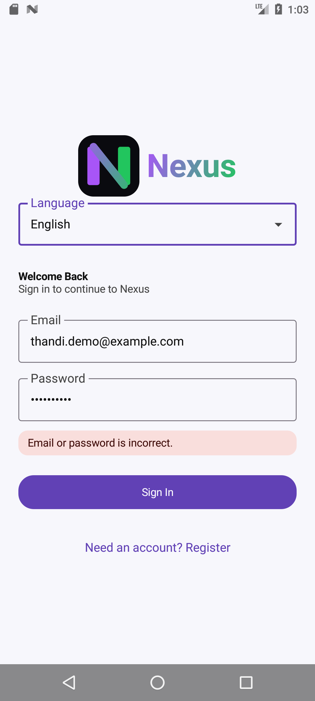
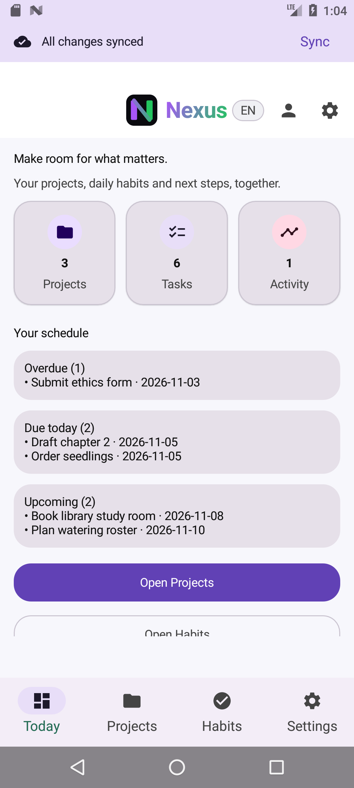
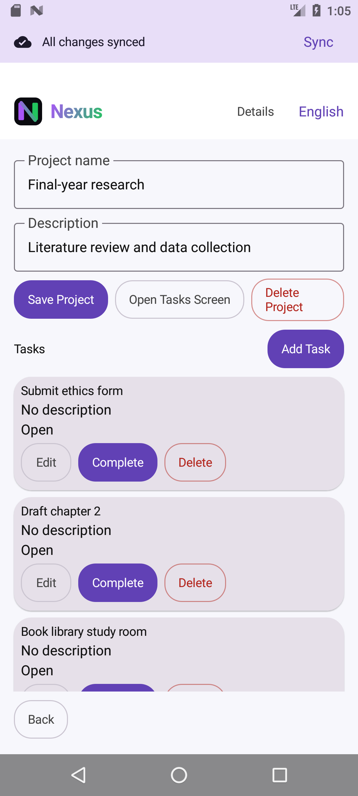
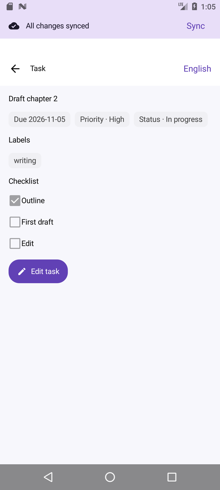
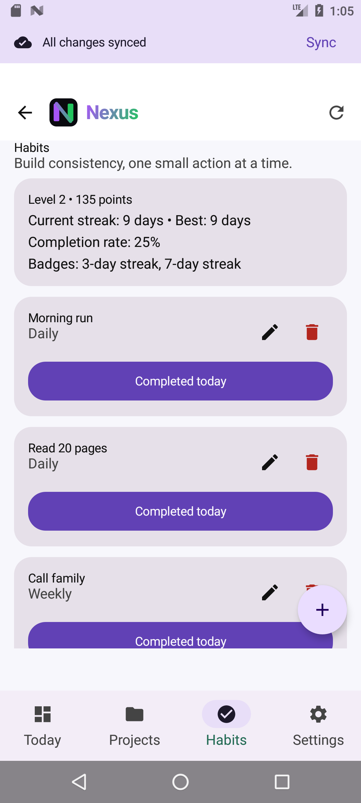
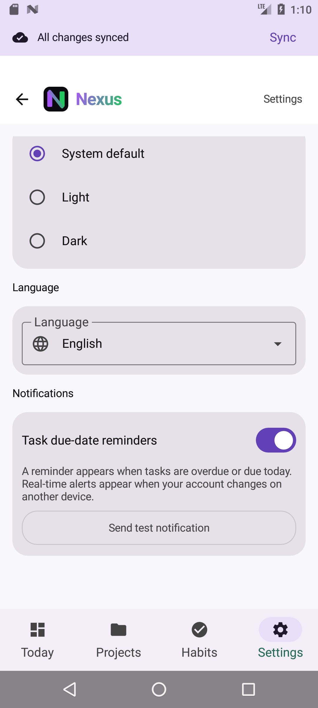
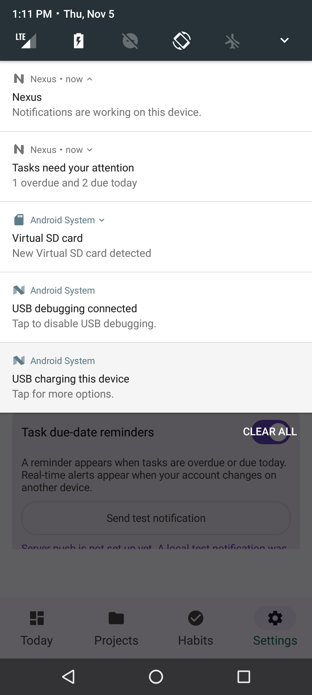
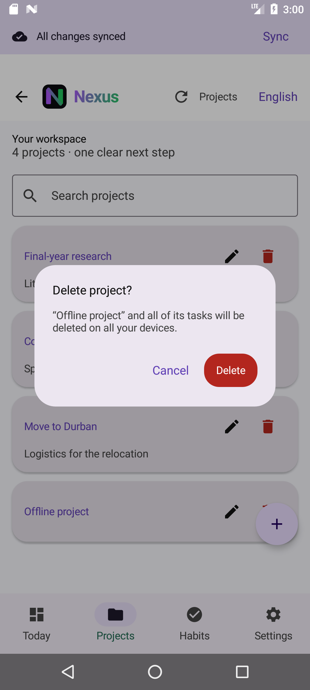
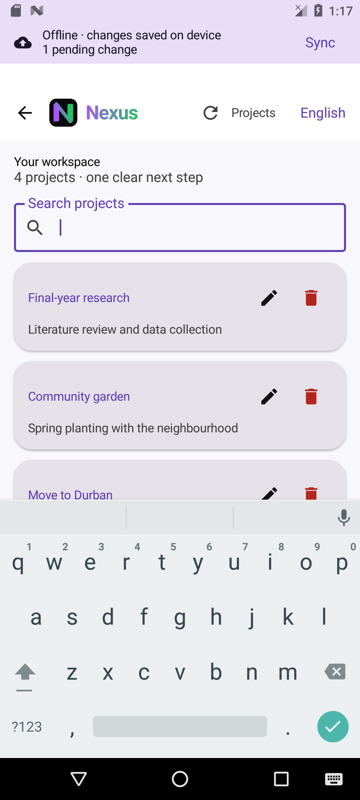
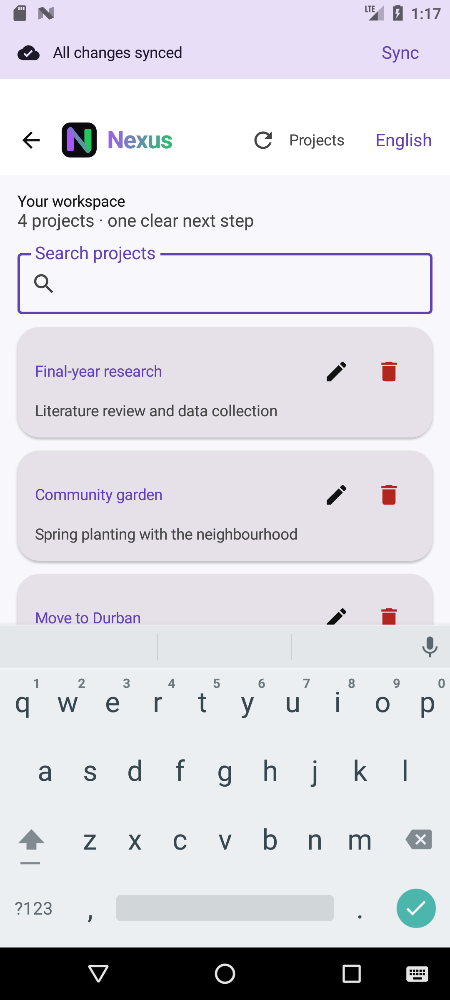
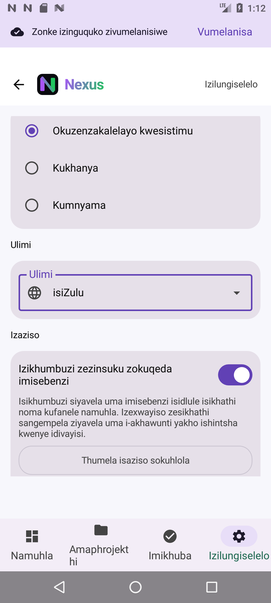
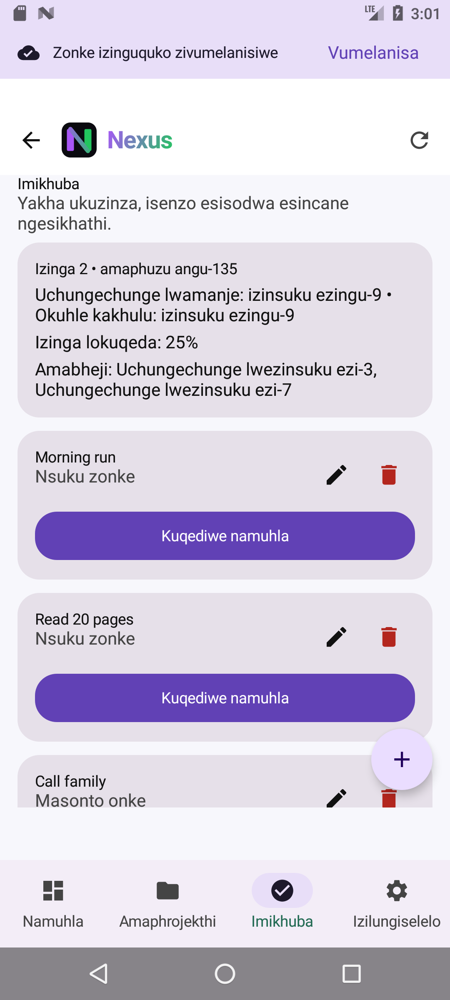
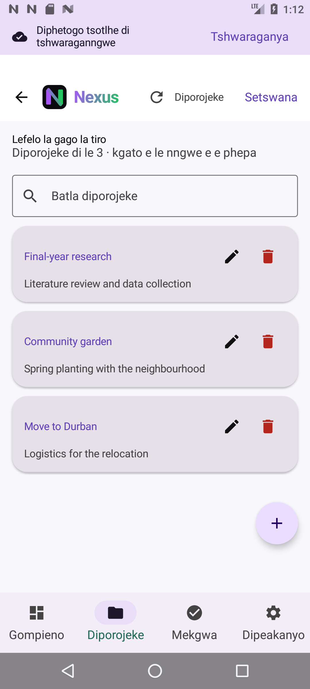
5Demonstration video script (about 8 minutes, physical phone, voice-over)
Before recording: deploy the API over HTTPS, configure Google SSO and Firebase (NX-11-DEP), and install the signed build on the phone. Use a demo account, never real passwords, and do not show tokens or secrets on screen.
| Time | Show | Say (key points) |
|---|---|---|
| 0:00 | Phone home screen, app icon, launch, splash | Nexus 2.0, what it is for, that this is a physical phone. |
| 0:30 | Register a new user; wrong password, then the correct one | Validation; passwords hashed with bcrypt on the server; JWT stored encrypted on the phone. |
| 1:30 | "Continue with Google" | SSO: Google returns an ID token, which our API verifies before issuing a session. |
| 2:15 | API data: the hosted /health and the users in the data store (hashes visible, not passwords), plus the Firebase console's registered app | "What data is stored in the online-hosted authentication service, API and database." |
| 3:00 | Create a project and tasks with due date, priority, labels and checklist; filters; Today cards | User-defined features (Part 1 names). |
| 4:00 | Habits: complete today, streaks, badges; CSV export | Gamification. |
| 4:45 | Airplane mode on → create and edit → banner shows pending → airplane mode off → synced → item visible in the API data | Offline mode with sync and duplicate-proof replay. |
| 5:45 | Second device or emulator signed in to the same account: edit there, and the phone receives a push. Then Settings → Send test notification, and a due-date reminder | Real-time notifications (FCM) and scheduled reminders. |
| 6:45 | Switch to isiZulu, then Setswana, on Login and Settings | Multi-language support for two South African languages. |
| 7:15 | Settings: theme, password, delete account | Settings menu. |
| 7:40 | GitHub: README, Actions green checks, tag final-poe; Play Console Internal testing | Automated tests, CI and publication preparation. |
6AI-use write-up
Tools used. OpenAI Codex (September 2026; cited in Part 2) helped draft Kotlin implementation ideas and explain build errors. Cline (VS Code extension) and the GitHub Copilot coding agent were used during September 2026; their checkpoints and commits are visible in the Git history. Dependabot proposed dependency updates. For Part 3 (5 November 2026), Anthropic's Claude Code (Claude Opus 5.5) was used.
What Claude Code produced. It analysed the repository and wrote the twelve-document documentation package and this submission. It implemented the Google SSO endpoint and client, the FCM push sender and receiver, WorkManager reminders, the isiZulu and Setswana string catalogue (first-draft translations), fixes for the audit findings, the release-signing setup and the Play Store kit. It also added backend and Android unit tests, and drove an emulator to capture the screenshots and check offline sync and notifications.
How the output was checked. All code was compiled, and the tests were run: 29 backend, 42 Android unit and 16 instrumented, all passing (section 8). Behaviour was checked on an emulator. One defect found this way, a crash on opening Settings, was fixed before submission. Statements in the documents were checked against the code and test output; unknowns are labelled rather than guessed. Translations are marked for first-language review. Team action each member should review the changes, run the app on a phone, and edit this section to describe their own review.
Citation. Anthropic (2026) Claude Code [AI coding assistant], Claude Opus 5.5. Used 5 November 2026 for implementation, testing support, translation drafts and documentation. OpenAI (2026) Codex, used September 2026. Cline (2026) Cline VS Code extension, used September 2026. GitHub (2026) Copilot coding agent, used 23 September 2026. Prompts and outputs are kept in the tool session logs.
7Publication preparation
| Item | Evidence |
|---|---|
| Upload key and signing | scripts/create-upload-keystore.ps1 created a 4096-bit RSA PKCS12 upload key outside the repository; keystore.properties is git-ignored. Release signing verification: On 2026-11-05 a release APK (R8 minify and resource shrinking) was built at 13:51 and checked with apksigner verify --verbose --print-certs. Result: "Verified using v2 scheme (APK Signature Scheme v2): true", 1 signer, certificate DN "CN=Nexus, OU=OPSC6312, O=Nexus, C=ZA", SHA-256 b100fcba2328e91298e79113379e16a45c9cf9b4af5f708f607fc16039508f9f (matches the upload key). That Gradle run then failed on a configuration-cache problem in the release HTTPS guard. After that was fixed, assembleRelease completed with BUILD SUCCESSFUL, and an http:// URL is still rejected. The verification builds used the placeholder https://api.nexus.invalid/api/ and were deleted: rebuild the submittable APK/AAB with the real HTTPS API URL. |
| Release build guard | Release builds fail unless NEXUS_API_URL is HTTPS; R8 minify and resource shrinking are on. |
| Store listing kit | docs/play-store/: 512 px icon (32-bit), 1024×500 feature graphic, 8 phone screenshots (1080×2160), listing text, Data safety answers, content rating, privacy policy. |
| Remaining | Team action host the API, publish the privacy policy, build bundleRelease with the real URL, upload to Play Console Internal testing, and screenshot the Console. |
8Test results (2026-11-05)
| Suite | Result |
|---|---|
Backend: npm test (Jest + Supertest, Zod 4.6.7) | 29/29 passed: server.test.js 11, sync.test.js 5, part3.test.js 13 (SSO, push, device tokens, data-file safety, email case) |
Android unit: gradlew test | 42/42 passed, including new AuthErrorMessagesTest (5), ReminderPlannerTest (2), CsvRowTest (2) and a HabitScoringTest case |
Android instrumented: connectedDebugAndroidTest, Android 7.0 emulator | 16/16 passed with the API stopped. Earlier runs: 14/16 with a live API (AUD-22) and one flaky instrumentation crash. |
| On-device walkthrough | Sign-in error, all screens, three languages, offline create → sync → present on the server, reminder ("1 overdue and 2 due today"), test notification, Settings crash fixed and re-verified |
9What the team must still do
- Review all changes, commit, push, merge to
main, close Dependabot PR #27 as superseded, and tagfinal-poe. - Resolve the GitHub Actions billing lock and confirm green CI on the final commit.
- Host the API over HTTPS (any Node 22 or container host with a persistent disk; see NX-11-DEP), and set
JWT_SECRET,GOOGLE_CLIENT_ID,FIREBASE_SERVICE_ACCOUNT_BASE64andTRUST_PROXY. - Create the Google Cloud OAuth clients (Web + Android with the SHA-1s) and the Firebase project (
google-services.json). - Build the signed release with the real URL and install it on a physical phone.
- Record the video (section 5), upload it unlisted, and add the link to the README and the cover.
- Publish the privacy policy (fill in the contact email), upload to Play Console Internal testing, and screenshot it.
- Have isiZulu and Setswana speakers review
docs/i18n/catalog.py, then runpython docs/i18n/generate_strings.py. - Confirm the User Defined 4/5 feature names, the student details, and the AI-use write-up.
10Appendix: documentation package (v2.0)
The twelve deliverables follow. They were updated for v2.0, and each document's control table states its evidence baseline.
Nexus · Combined submission
Nexus Documentation Package
Twelve numbered deliverables for the Nexus Android app and Node.js API, compiled from repository evidence.
| Version | 2.0 |
|---|---|
| Date | 2026-11-05 |
| Status | Draft for team review (not approved) |
| Evidence baseline | Branch New-Changes: commit 716bedb plus the uncommitted Part 3 working-tree changes of 2026-11-05 (v1.0 analysed 3a3f275) |
| Prepared by | AI-assisted (Claude Code) from repository evidence; team review pending |
Nexus · Documentation package · Deliverable 01
Product Requirements
Purpose, users, scope, functional requirements, constraints and acceptance criteria for Nexus as implemented.
| Document ID | NX-01-PRD |
|---|---|
| Version | 2.0 |
| Date | 2026-11-05 |
| Status | Draft for team review (not approved) |
| Intended readers | Module assessor reviewing the PoE; developers and testers taking over the codebase |
| Evidence baseline | Branch New-Changes: commit 716bedb plus the uncommitted Part 3 working-tree changes of 2026-11-05 (v1.0 analysed 3a3f275) |
| Prepared by | AI-assisted (Claude Code) from repository evidence; team review pending |
| Approved by | Unknown No approval recorded |
Evidence labels used in this document: Implemented verified in code, configuration or test output; Inferred reasoned from evidence but not executed; Recommendation proposed, not implemented; Open question needs a decision; Unknown no evidence available; Estimate planning figure, not a measurement.
1Purpose and product summary
Version 2.0 update (Part 3). Requirements FR-21 to FR-23 (Google SSO, real-time push, due-date reminders) are new. FR-05 and FR-18 are now fully implemented, and the defects behind FR-01 and FR-02 are fixed. Each row states its current status.
Nexus is an Android app for personal project planning and habit tracking, backed by a small Node.js/Express REST API in backend/. The README describes it as "a calm, focused Android workspace for project planning and habit tracking". This document records what the product does at the evidence baseline, what it deliberately does not do, and how each requirement can be accepted. Requirement IDs (FR-nn, NFR-nn, CON-nn) are referenced by every other deliverable.
How to read status. Implemented means the behaviour exists in source at the baseline commit; it does not by itself mean the behaviour was exercised end-to-end on a device for this package. Verified test results are listed in NX-09-TDH. Gaps are tracked as findings in NX-08-AUD and as tasks in NX-06-PLAN.
2Users and roles
| ID | Role | Description | Evidence |
|---|---|---|---|
| ROLE-01 | Visitor (not signed in) | Can view the splash screen, register and sign in. Every other route redirects to Login. | NexusNavHost.kt auth guard Implemented |
| ROLE-02 | Signed-in user | Owns their projects, tasks, habits and profile. All API data is partitioned by the JWT sub (user id); the Room cache is partitioned by the same owner id. | server.js withAuthAndDb; Database.kt userId columns Implemented |
There is no administrator, collaborator or shared-project role. The README's test-credential table labels one seeded account "Global system administrator", but the API has no role field or role checks, so that account is an ordinary user Implemented. See AUD-09.
3Scope
3.1In scope (implemented)
- Account lifecycle: register, sign in (email/password or Google SSO), persisted session, sign out, profile, preferences, password change, account deletion.
- Notifications: scheduled due-date reminders and real-time push of changes made on another device.
- Projects with tasks (due date, priority, status, labels, checklist), search and filters.
- Habits with daily completion, streaks, points, levels, badges and CSV export.
- Offline-first local saves with an ordered upload queue, sync status banner and conflict review.
- English, isiZulu and Setswana on every screen; light/dark/system theme; animated splash that respects reduced motion.
3.2Out of scope or planned (not implemented)
From PROJECT_IMPROVEMENTS.md ("Still planned") and docs/POE_PART_2_ADDENDUM.md: board/calendar/timeline views, recurring tasks, attachments/templates/archive, collaboration/roles/comments, account recovery, general import/export, widgets, tablet layouts, and SQLite on the server. None of these exist in code Implemented. Google SSO, push notifications, reminders and full localisation were planned for the final PoE and are now implemented (FR-21 to FR-23, FR-18).
4Functional requirements
Acceptance criteria are written so a tester can run them against the debug build and a local API (setup in NX-11-DEP).
| ID | Requirement | Acceptance criteria | Evidence / status |
|---|---|---|---|
| FR-01 | Register an account with display name, email and password. | Blank fields, a malformed email or a password under 6 characters are rejected on the device before sending. API returns 201 and a JWT; a duplicate email returns 409 EMAIL_ALREADY_REGISTERED, which the app explains ("An account with this email already exists"). Emails are case-insensitive. | AuthViewModel.kt, registerSchema Implemented; fixed in v2.0 (AUD-18, AuthErrorMessagesTest) |
| FR-02 | Sign in and keep the session across app restarts. | Valid credentials return a JWT (24 h expiry) stored in EncryptedSharedPreferences; relaunching the app opens the Dashboard. Wrong credentials (401 INVALID_CREDENTIALS) show "Email or password is incorrect." Sign-in requires the API; there is no offline sign-in. | TokenManager.kt, tokenFor() Implemented; verified on device 2026-11-05 (AUD-18 fixed) |
| FR-03 | Sign out. | A confirmation dialog appears; confirming clears the token and returns to Login. Unsent changes stay on the device and upload only when the same account signs in again. | LogoutConfirmationDialog.kt, docs/ONLINE_OFFLINE.md Implemented |
| FR-04 | View and edit the profile display name. | Profile shows display name and email; Settings saves a new display name via PATCH /users/me. A cached profile is shown offline. | ProfileScreen.kt, UserRepository.kt Implemented |
| FR-05 | Account preferences: language and notification preference. | Changing language (en/zu/tn) or the reminders switch sends a partial PATCH /users/me. If the language update fails it is marked pending and retried. The reminders switch controls the notifications in FR-23. | SettingsViewModel.kt Implemented; AUD-10 fixed |
| FR-06 | Choose System, Light or Dark theme. | Selection applies immediately at the activity root and persists on the device only (not synced). | SettingsPreferences.kt, MainActivity.kt Implemented |
| FR-07 | Change password. | Requires the current password and a new password of 6 or more characters. Wrong current password returns 401 INCORRECT_CURRENT_PASSWORD; success returns 204. Requires the API. | PasswordDialog.kt, /users/me/password Implemented |
| FR-08 | Delete account and all data. | A confirmation dialog ("This permanently deletes your account and synced data.") precedes deletion. The API removes the user, projects, tasks and habits; the app purges that account's local rows and queue, then signs out. | SettingsScreen.kt, DELETE /users/me, NexusApp.kt purge callback Implemented |
| FR-09 | Dashboard ("Today") overview. | Shows counts for projects, tasks and activity (completed tasks), plus "Your schedule" cards: Overdue, Due today and the next 3 Upcoming incomplete tasks. Shows "Showing saved data" when served from cache. Refresh also downloads every project's tasks for offline use. | DashboardScreen.kt, DashboardRepository.kt Implemented |
| FR-10 | Create, view, edit, delete and search projects. | A project needs a non-empty name; description is optional. Search filters the list by name. Deleting a project also deletes its tasks locally and on the server. | ProjectListScreen.kt, ProjectDetailScreen.kt, ProjectRepository.kt Implemented |
| FR-11 | Create, edit, complete and delete tasks within a project. | A task has title (required), description, due date (yyyy-MM-dd), priority (None/Low/Medium/High), status (To do/In progress/Done), labels and checklist steps. Marking Done sets isCompleted; the API keeps status and isCompleted consistent. | TaskEditorDialog.kt, taskSchema Implemented |
| FR-12 | Find tasks quickly. | Task list offers text search over title and labels, status chips (All, Open, In progress, Done) and a High priority chip; shows progress "x of y tasks complete". A task detail screen shows priority, status, labels and checklist with an Edit action. | TaskListScreen.kt, TaskDetailScreen.kt Implemented |
| FR-13 | Create, edit, delete and complete habits. | A habit has a name and frequency (Daily, Weekly, Custom). "Complete today" toggles today's date in completedDates; the button reads "Completed today" when done. | HabitsScreen.kt, HabitCard.kt, HabitsViewModel.kt Implemented |
| FR-14 | Habit progress and rewards. | Habits screen shows level, points, current and best streak, completion rate, badges (3-day streak, 7-day streak, Reliable habit builder) and reward suggestions, all computed on the device. | HabitScoring.kt, HabitScoringTest.kt Implemented; AUD-17 fixed in v2.0 |
| FR-15 | Export habit history as CSV. | Settings, then "Export habits CSV" builds habit,frequency,completed_date rows; "Share CSV" opens the Android share sheet with text/csv. | SettingsViewModel.exportCsv(), CsvRowTest Implemented; AUD-11 fixed (RFC 4180 quoting) |
| FR-16 | Work offline and sync later. | Project, task and habit creates, edits and deletes are saved to Room together with an upload record in one transaction, and they survive an app restart. Uploads run on refresh, when the network returns, when you tap Sync, and every 30 s while the process is alive. The banner shows the pending count and state. | SyncManager.kt, NexusApp.kt, OfflinePersistenceTest.kt Implemented |
| FR-17 | Handle sync conflicts without losing data silently. | Retried operations are never duplicated (server keeps operation receipts). An edit to an item deleted elsewhere returns 409 and stops the queue; Review offers "Keep changes" or "Discard item edits". Existing-item edits are last-upload-wins. | /api/sync, sync.test.js Implemented |
| FR-18 | Use the app in English, isiZulu or Setswana. | Selecting a language (login screen or Settings) switches every screen, dialog, error, sync message and notification. Each locale has 210 strings and 4 plurals, generated from one catalogue. Translations need first-language review. | docs/i18n/catalog.py, values-zu, values-tn, LocalizedMessages.kt Implemented; verified on device (screenshots 14–18) |
| FR-19 | Animated splash and motion that respect accessibility settings. | With system animations disabled, the splash and screen transitions render without animation. | SplashIntroScreen.kt, Motion.kt, SplashIntroScreenTest.kt Implemented |
| FR-20 | Show server notices. | The Dashboard shows a banner for maintenance mode or the first announcement from GET /app/config. The API always returns maintenance off and no announcements. | RemoteConfigViewModel.kt, /api/app/config Implemented |
| FR-21 | Sign in with Google (single sign-on). | "Continue with Google" appears on Login and Register when the build has a Web client ID. Credential Manager returns a Google ID token; POST /api/auth/google verifies signature, audience, expiry and email verification with Google, creates the account on first use (201) or links an existing email (200), and returns a Nexus JWT. Invalid tokens give 401; an unconfigured server gives 503, which the app explains. A Google-only account cannot use password sign-in (401) or change password (409). | GoogleSignIn.kt, server.js, part3.test.js (3 tests, stubbed verifier), AuthErrorMessagesTest Implemented. End to end with real Google: Unknown until the OAuth clients are created |
| FR-22 | Real-time push notifications. | After sign-in the app registers its FCM token (POST /users/me/devices, at most 10 per user; a token belongs to one account). When a synced change is applied, the API pushes "Project "X" added on another device" to the user's other devices, excluding the sender. The receiving app shows the notification and refreshes its offline cache. Dead tokens are pruned. "Send test notification" in Settings triggers a server push and shows a local one. | Push.kt, push.js, part3.test.js (5 tests) Implemented; local display verified on device; FCM delivery Unknown until a Firebase project is configured |
| FR-23 | Due-date reminders. | With reminders on, a WorkManager job runs about every 12 hours (and immediately after sign-in or switching reminders on). It reads the offline cache and posts "Tasks need your attention: n overdue and m due today" with up to three task titles. It runs while the app is closed and without network. Android 13+ asks for the notification permission. | Reminders.kt, ReminderPlanner + ReminderPlannerTest Implemented; verified on device ("1 overdue and 2 due today") |
5Non-functional requirements
| ID | Requirement | Evidence / status |
|---|---|---|
| NFR-01 | Credentials and tokens are protected: bcrypt (cost 12) password hashes; JWT secret of at least 32 characters enforced at startup; token stored encrypted on the device; auth endpoints (including Google sign-in) rate-limited to 10 requests per 15 min per client IP (proxy-aware with TRUST_PROXY); Google ID tokens verified server-side. | server.js, TokenManager.kt, server.test.js Implemented |
| NFR-02 | Release builds use HTTPS only; cleartext HTTP is allowed only in debug builds. | network_security_config.xml (main/debug), preReleaseBuild check Implemented |
| NFR-03 | Data isolation: each account sees only its own server data and cached rows. | Per-user maps on the server; userId-scoped DAO queries; sync ownership test Implemented |
| NFR-04 | Durability: a local save is never lost because an upload failed; server writes are atomic (temp file + rename) and serialised by a mutex. | SyncManager.save(), saveDatabase() Implemented; corrupt-file risk AUD-01 |
| NFR-05 | Accessibility: icon buttons carry content descriptions; reduced motion is respected; fallback brand colours were chosen for contrast. | Code review only Implemented; no formal accessibility audit has been run Unknown |
| NFR-06 | Compatibility: Android 7.0 (API 24) and later; target/compile SDK 37. | app/build.gradle.kts Implemented |
| NFR-07 | Responsiveness on poor networks: 5 s connect timeout and 15 s call timeout, after which cached data is shown. | RetrofitClient.kt Implemented |
| NFR-08 | Observability: structured JSON logs (Pino) with request ids and redaction of passwords and authorization headers; /health liveness endpoint. | server.js Implemented |
6Constraints and assumptions
| ID | Constraint | Source |
|---|---|---|
| CON-01 | The API stores all data in one JSON file and must run as a single instance; replicas must not share the file. | docs/ONLINE_OFFLINE.md, server.js Implemented |
| CON-02 | No public API host has been provisioned. Release builds cannot be produced without an HTTPS NEXUS_API_URL. | README, app/build.gradle.kts Implemented |
| CON-03 | Background upload is not guaranteed while the app process is stopped; there is no WorkManager job. | docs/ONLINE_OFFLINE.md, NexusApp.kt Implemented |
| CON-04 | The project has no PostgreSQL or other database server, and the PoE material must not present one. | docs/POE_PART_2_ADDENDUM.md Implemented |
| CON-05 | Data that was never downloaded to a device cannot appear offline. | docs/ONLINE_OFFLINE.md Implemented |
7Success measures
The repository defines no product metrics or analytics. PROJECT_IMPROVEMENTS.md asks that each feature define "one measurable success outcome", but none is recorded Unknown. Recommendation Before the final PoE, agree on two or three measures that can be checked during testing, for example "a task created offline appears on the server within one sync cycle of reconnecting" (FR-16).
8Open questions
| ID | Question | Related |
|---|---|---|
| OQ-01 | Resolved 2026-11-05: reminders were built for the final PoE (FR-23). | FR-05, AUD-10, IMP-08 |
| OQ-02 | Which public host will run the API, and who owns its secret and backups? Open question | CON-02, NX-11-DEP |
| OQ-03 | Is a "Global system administrator" role actually required? If so it needs server-side authorisation; if not, the README label should be corrected. Open question | ROLE-02, AUD-09 |
| OQ-04 | Resolved: all three are implemented (FR-21, FR-22, FR-18). Still open: who creates and owns the Google Cloud and Firebase projects. Open question | NX-06-PLAN |
Nexus · Documentation package · Deliverable 02
Technical Requirements
Architecture, technology stack, interfaces, quality attributes and operational requirements.
| Document ID | NX-02-TRD |
|---|---|
| Version | 2.0 |
| Date | 2026-11-05 |
| Status | Draft for team review (not approved) |
| Intended readers | Developers and operators maintaining Nexus; assessor checking technical depth |
| Evidence baseline | Branch New-Changes: commit 716bedb plus the uncommitted Part 3 working-tree changes of 2026-11-05 (v1.0 analysed 3a3f275) |
| Prepared by | AI-assisted (Claude Code) from repository evidence; team review pending |
| Approved by | Unknown No approval recorded |
Evidence labels used in this document: Implemented verified in code, configuration or test output; Inferred reasoned from evidence but not executed; Recommendation proposed, not implemented; Open question needs a decision; Unknown no evidence available; Estimate planning figure, not a measurement.
1System context
Version 2.0 update. Part 3 added Google SSO (Credential Manager plus google-auth-library), FCM push (firebase-messaging plus firebase-admin), WorkManager reminders, full en/zu/tn resources, release signing, Zod 4 and Node 22. The diagram shows the core components; the new pieces are listed in the tables below.
Nexus has two deployable parts: the Android app (app/, package com.example.nexus) and the Nexus API (backend/server.js). The app talks to the Nexus API over REST/JSON. Since v2.0 it also uses Google Identity (Credential Manager) for SSO and Firebase Cloud Messaging for push. A Retrofit client for the public MyMemory translation API is defined, but nothing in the app calls it (Implemented, AUD-09).
2Technology stack
| Layer | Technology and version | Source |
|---|---|---|
| Android language / build | Kotlin 2.0.21, AGP 9.3.1, Gradle 9.7.1 wrapper, JDK 17 target, KSP 2.0.21-1.0.28 | build.gradle.kts, gradle-wrapper.properties |
| SDK levels | minSdk 24, targetSdk 37, compileSdk 37; versionCode 1, versionName 1.0 | app/build.gradle.kts |
| UI | Jetpack Compose (BOM 2026.02.01), Material 3, Navigation Compose 2.8.0 with kotlinx-serialization routes, material-icons-extended | libs.versions.toml, app/build.gradle.kts |
| Networking | Retrofit 3.0.0 + Gson converter, OkHttp logging-interceptor 4.12.0 (BASIC in debug, NONE in release) | RetrofitClient.kt |
| Local storage | Room 2.8.5 (runtime, ktx, compiler via KSP); AndroidX Security Crypto 1.1.0 | Database.kt, TokenManager.kt |
| SSO and notifications (v2.0) | androidx.credentials 1.6.0 + play-services-auth, googleid 1.1.1; WorkManager 2.12.0; Firebase BoM 35.1.0 (firebase-messaging); google-services plugin 4.5.0, applied only when app/google-services.json exists | app/build.gradle.kts |
| Quality tooling | ktlint plugin 12.1.2, detekt 1.23.8, Kover 0.9.1; JUnit 4.13.2, MockK 1.13.12, coroutines-test 1.8.1, Compose UI test | build.gradle.kts |
| API runtime | Node.js 22 (CI and Docker; required by google-auth-library 11 and firebase-admin 14), ES modules | .github/workflows/*.yml, backend/Dockerfile |
| API libraries | express ^4.21.2, bcryptjs ^2.4.3, jsonwebtoken ^9.0.2, zod ^4 (4.6.7 installed), google-auth-library ^11.3.3, firebase-admin ^14.5.0, express-rate-limit ^7.5.0, helmet ^8.3.0, cors ^2.8.6, pino ^10.3.1, pino-http ^11.0.0 | backend/package.json |
| API tests | Jest ^29.7.0 and Supertest ^7.0.0, run in band with --experimental-vm-modules | backend/package.json |
3Architecture requirements
| ID | Requirement | How it is met |
|---|---|---|
| TR-01 | Single-activity MVVM with feature packages. | MainActivity hosts NexusNavHost. UI is grouped under ui/<feature>; ViewModels expose StateFlow UI state Implemented. |
| TR-02 | Repositories own all data access; ViewModels never call Retrofit directly. | Six repositories are created once in NexusApp (manual DI container). ViewModels take constructor parameters with defaults so tests can inject fakes Implemented. |
| TR-03 | Business rules live outside the UI. | domain/HabitScoring is pure Kotlin and is unit-tested Implemented. |
| TR-04 | Local writes are transactional with their outbox record. | SyncManager.save() runs the entity write and the PendingChange insert inside withTransaction, under a coroutine Mutex Implemented. |
| TR-05 | Reads never overwrite unsent local edits. | SyncManager.read() flushes the queue first and falls back to Room if the flush fails or the network is unavailable Implemented. |
| TR-06 | Room schema changes ship with migrations; no destructive fallback. | Migrations 3→4 and 4→5 are registered; fallbackToDestructiveMigration is deliberately absent Implemented. Schema export is off (AUD-12). |
| TR-07 | API base URL is configured at build time. | NEXUS_API_URL Gradle property or environment variable must match https?://host[:port]/path/. It defaults to http://10.0.2.2:5263/api/, and release builds fail unless it starts with https:// Implemented. |
| TR-08 | API validates every write before it touches the store. | Zod schemas for register, login, profile (strict), password, project, task, habit and sync. Failures return 400 VALIDATION_ERROR Implemented. |
| TR-09 | API errors use one response shape. | Central handler returns { error: { message, requestId, code? } }; in production a 500 message is replaced with "Internal Server Error" Implemented. |
| TR-10 | Idempotent offline replay. | POST /api/sync takes operationId (UUID) and stores receipts per user. A repeated operation returns 204 without effect Implemented. |
4Interfaces
4.1Nexus API endpoints
All paths are under /api except the root /health. "Auth" means a Authorization: Bearer <JWT> header is required; a missing or invalid token gives 401 UNAUTHORIZED, and a token for a deleted user gives 401 SESSION_EXPIRED.
| Method and path | Auth | Purpose and notable responses |
|---|---|---|
GET /health, GET /api/health | No | {status:"ok", uptime} |
GET /app/config | No | Static config: versions 1.0.0, maintenance off, feature flags, no announcements |
GET /localization/:language | No | Five-string bundle for en/zu/tn (falls back to en) |
POST /auth/register | No, rate-limited | 201 {token}; 409 duplicate email; 429 after 10 per 15 min |
POST /auth/login | No, rate-limited | 200 {token}; 401 invalid credentials (emails case-insensitive) |
POST /auth/google | No, rate-limited | {idToken}; 201 new account or 200 existing/linked, {token}; 401 INVALID_GOOGLE_TOKEN; 503 SSO_NOT_CONFIGURED |
POST /users/me/devices, DELETE /users/me/devices/:token | Yes | Register or unregister an FCM token (204) |
POST /users/me/notifications/test | Yes | Pushes a test notification; returns {configured, sent, devices} |
GET/PATCH /users/me | Yes | Profile {email, displayName, language, notificationsEnabled}; PATCH rejects unknown fields |
POST /users/me/password | Yes | 204; 401 wrong current password |
DELETE /users/me | Yes | 204; removes the user and all their data |
GET /dashboard | Yes | {projects, tasks, activity} counts |
POST /sync | Yes | 204 applied or duplicate; 400 invalid payload; 409 SYNC_CONFLICT |
GET/POST /projects | Yes | List / create (201) |
GET/PUT/DELETE /projects/:projectId | Yes | Read / update / delete (delete cascades to tasks); 404 PROJECT_NOT_FOUND |
GET/POST /projects/:projectId/tasks | Yes | List / create task; 404 if the project is not owned |
PUT/DELETE /tasks/:taskId | Yes | Update / delete; 404 TASK_NOT_FOUND |
GET/POST /habits, PATCH/DELETE /habits/:habitId | Yes | List / create / update / delete; 404 HABIT_NOT_FOUND |
When NODE_ENV=test only, GET /api/test/error-500 also exists for error-handler tests Implemented. The app uses the direct project, task and habit endpoints only when no SyncManager is wired in. In the production wiring (NexusApp), writes go through POST /sync Implemented.
4.2Device integrations
- Permissions:
INTERNET,ACCESS_NETWORK_STATEand (v2.0)POST_NOTIFICATIONS, requested at runtime on Android 13+ Implemented. - WorkManager periodic job (reminders) and an FCM
FirebaseMessagingService(v2.0) Implemented. ConnectivityManagernetwork callback triggers sync when a network becomes available Implemented.- Android share sheet for CSV export (
Intent.ACTION_SEND,text/csv) Implemented. - Backup:
allowBackup="true"; since v2.0 both shared preferences and the Room database are excluded from cloud backup and device transfer (AUD-05 fixed).
5Quality attributes
| Attribute | Current position | Related |
|---|---|---|
| Security | Controls listed in NFR-01 and NFR-02 are implemented. CORS is open (*), which is documented as intentional for a mobile client. No formal security review or penetration test has been performed Unknown. | AUD-06, AUD-16 |
| Reliability | Atomic file writes and an in-process mutex. However, a JSON file that cannot be parsed at startup is replaced on the next write (AUD-01). | NFR-04 |
| Scalability | Single process and single file; every request, including bcrypt hashing, holds one global lock. PROJECT_IMPROVEMENTS.md treats this as adequate for fewer than 50 users and 10,000 tasks Inferred; this was not load-tested. | CON-01, AUD-07 |
| Maintainability | Feature packages, shared test fakes, ktlint/detekt/Kover configured. Lint is not enforced in CI (AUD-04). | NX-07-CICD |
| Portability | Android 7.0+. The API runs on any Node host or as a container. | NX-11-DEP |
6Operational requirements
| Variable | Required | Behaviour |
|---|---|---|
JWT_SECRET | Yes | At least 32 characters and not a known placeholder, or the process exits with code 1. Keep it stable across restarts, or existing sessions become invalid. |
PORT | No (5263) | HTTP listen port. |
DATABASE_PATH | No | Data file path; defaults to backend/nexus-data.json, and to /data/nexus-data.json in the Docker image. |
NODE_ENV | No | production hides 500 messages; test disables listening and enables the test route. |
LOG_LEVEL | No (info) | Pino log level. |
GOOGLE_CLIENT_ID | For SSO | Web OAuth client ID(s), comma-separated, accepted as the ID-token audience. Unset disables /auth/google (503). |
FIREBASE_SERVICE_ACCOUNT_BASE64 | For push | Base64 of the Firebase service-account JSON (or use GOOGLE_APPLICATION_CREDENTIALS). Unset makes push a logged no-op. |
TRUST_PROXY | Behind a proxy | Express trust-proxy setting (e.g. 1) so rate limiting uses the client IP. |
- OPS-01 TLS termination must be provided by the host or a reverse proxy; the API itself serves plain HTTP Implemented.
- OPS-02 The data file (or
/datavolume) must be persistent and backed up. The repository contains no backup tooling Implemented. - OPS-03 Run exactly one API instance per data file (CON-01).
Nexus · Documentation package · Deliverable 03
Application Flow
Navigation map, key user journeys, system interactions and error/alternate flows.
| Document ID | NX-03-FLOW |
|---|---|
| Version | 2.0 |
| Date | 2026-11-05 |
| Status | Draft for team review (not approved) |
| Intended readers | Testers, developers and the assessor following the demo |
| Evidence baseline | Branch New-Changes: commit 716bedb plus the uncommitted Part 3 working-tree changes of 2026-11-05 (v1.0 analysed 3a3f275) |
| Prepared by | AI-assisted (Claude Code) from repository evidence; team review pending |
| Approved by | Unknown No approval recorded |
Evidence labels used in this document: Implemented verified in code, configuration or test output; Inferred reasoned from evidence but not executed; Recommendation proposed, not implemented; Open question needs a decision; Unknown no evidence available; Estimate planning figure, not a measurement.
1Navigation map
Routes are type-safe @Serializable objects in NexusNavHost.kt. The app starts at Splash. An auth guard sends any signed-out user on a protected route to Login, and sends a signed-in user on Login/Register to Dashboard Implemented. A bottom navigation bar (Today, Projects, Habits, Settings) appears on those four top-level routes only. A sync status banner appears on every authenticated screen except Splash.
2Key user journeys
Each journey lists the requirements it exercises. Steps reflect the implemented UI labels.
| ID | Journey | Main path | Requirements |
|---|---|---|---|
| UF-01 | First launch and registration | Splash animation, then Login, then "Need an account? Register". Enter Display Name, Email and Password, tap Create Account. A JWT is saved and the Dashboard opens with an empty state, "Start your first project". | FR-01, FR-19 |
| UF-02 | Returning user | Splash, then Dashboard directly (token present). The Dashboard refresh uploads queued changes, then downloads projects and all their tasks into Room. | FR-02, FR-09, FR-16 |
| UF-03 | Plan a project | Projects tab, then the + (New Project) button. Enter a name, create, and open the project. Use "Add Task" or "Open Tasks Screen", then + (New Task): set title, due date, priority, status, labels and checklist, and save. | FR-10, FR-11 |
| UF-04 | Decide what to do today | The Today tab shows the Overdue / Due today / Upcoming cards. In a project's task list, use search, the status chips or "High priority"; open a task for its detail view; mark it complete. | FR-09, FR-12 |
| UF-05 | Daily habit check-in | Habits tab, then + (Add habit), name it and choose a frequency. Tap "Complete today" each day; stats (level, points, streaks, badges) recalculate on the device. | FR-13, FR-14 |
| UF-06 | Work offline | With the API unreachable, create or edit items as usual. The banner reads "Saved on device · waiting to sync" with "n pending changes". When the network returns (network callback, the 30 s loop, or tapping Sync), the queue uploads in order and the banner shows "All changes synced". | FR-16, TR-04 |
| UF-07 | Resolve a conflict | An upload is rejected with 409 (or 400). The banner shows "An item changed on another device · review required" with a Review button. The dialog offers "Keep changes" (the queue stays blocked and the edits are kept) or "Discard item edits" (that entity's queued operations and its local row are removed, then the rest of the queue retries). | FR-17, AUD-19 |
| UF-08 | Session expiry during sync | Upload returns 401, the banner says "Sign in again to sync saved changes", and a "Sign in" button clears the token and opens Login. Queued changes stay on the device for the same account. | FR-02, FR-16 |
| UF-09 | Manage account | Settings tab: edit Display Name; choose Appearance (System/Light/Dark) and Language; toggle reminders; "Sync account"; "Export habits CSV", then "Share CSV"; "Change password"; "Delete account and data" (confirm); "Log Out". | FR-04 to FR-08, FR-15 |
| UF-11 | Sign in with Google (v2.0) | Login or Register: tap "Continue with Google", pick an account in the Credential Manager sheet. The app posts the ID token to /auth/google, receives a Nexus JWT and opens Today. First use creates the account; an existing email account is linked. | FR-21 |
| UF-12 | Notifications (v2.0) | Settings: keep "Task due-date reminders" on (grant permission on Android 13+). A reminder lists overdue and due-today tasks. "Send test notification" shows a local notification and reports the server push result. Editing on phone A pushes "Task … updated on another device" to phone B, which refreshes its cache. | FR-22, FR-23 |
| UF-10 | Shared device, account switch | User A signs out with pending changes and user B signs in. B sees only B's rows. A's queue is neither shown nor uploaded until A signs in again. | FR-03, NFR-03 |
3System interactions
3.1Offline save and upload (SEQ-01)
- The ViewModel calls a repository write, for example
TaskRepository.createTask(). The repository generates a UUID for new entities on the device. SyncManager.save()takes the mutex, then in one Room transaction writes the entity row and apending_changesrow (operationId,resource,entityId,action, JSONpayload).- Later,
flushLocked()reads the account's pending rows bysequenceand posts each one toPOST /api/sync. A row is deleted only after a 2xx response. - Server: if the
operationIdis already in the user's receipts it returns 204. Otherwise it validates the payload against the resource schema, checks for conflicts (update of a missing item, duplicate create, or a task whose project does not exist for this user), applies the change, records the receipt, saves atomically and returns 204. If the save fails, the in-memory change is rolled back. - The first failure stops the loop. Its HTTP status decides the banner message and whether Review is offered (400/409).
3.2Read with cache fallback (SEQ-02)
SyncManager.read()takes the mutex and flushes pending changes first.- If the flush fails, Room data is returned, so unsent edits are never overwritten by server data.
- If the flush succeeds, the remote call runs and replaces the account's cached rows in one transaction. On
IOExceptionthe cache is returned and the banner reads "Offline · showing saved data". Other HTTP errors (for example 401) are passed up to the ViewModel.
3.3Authentication (SEQ-03)
- Login/Register posts credentials; the API checks them with bcrypt and returns a JWT with
sub= user id, valid for 24 h. AuthSession.saveToken()stores it encrypted. The cache owner id is decoded from thesubclaim (not verified on the device; used only to scope the cache).- The OkHttp interceptor adds
Authorization: Bearerto every Nexus API request.
4Error and alternate flows
| ID | Condition | System behaviour | User sees |
|---|---|---|---|
| EF-01 | API unreachable or timed out (5 s connect, 15 s call) | Writes are queued; reads fall back to Room. | Banner "Offline · changes saved on device" or "Offline · showing saved data"; Dashboard "Showing saved data". Sign-in shows "No internet connection. Check your network and try again." |
| EF-02 | 401/403 on a screen request | ApiError.SessionExpired; Settings clears the session. | "Your session has expired. Please log in again." Since v2.0, a wrong password at sign-in shows "Email or password is incorrect." instead (AUD-18 fixed). |
| EF-03 | 409 at registration (email exists) or 429 (rate limit) | Mapped by AuthViewModel.authErrorMessage (v2.0). | "An account with this email already exists. Sign in instead." / "Too many attempts. Please wait 15 minutes and try again." |
| EF-09 | Google sign-in cancelled, no Google account on the device, or server SSO not configured | Cancel shows nothing; the other cases show a message. | "Add a Google account to this device…" / "Google sign-in is not available on this server yet." |
| EF-04 | 409/400 during sync | The queue stops at the failing operation; conflict=true. | Review button (UF-07) |
| EF-05 | 5xx from the API | ApiError.ServerError. In production the API hides internal messages. | "Something went wrong on our end. Please try again shortly." Sync banner: "Sync needs attention · saved changes kept on device". |
| EF-06 | Item not available offline | Room has no row (never downloaded). | Error state with Retry, e.g. "Project is not available offline" (CON-05) |
| EF-07 | Maintenance mode or announcement in /app/config | Dashboard banner. The API currently hard-codes maintenance off. | Maintenance message or the first announcement |
| EF-08 | Delete account fails (offline or error) | The session is kept and nothing is purged. | Error message in Settings |
Nexus · Documentation package · Deliverable 04
Design Brief
Design goals, navigation, visual conventions, accessibility and responsive behaviour as evidenced in the app.
| Document ID | NX-04-DES |
|---|---|
| Version | 2.0 |
| Date | 2026-11-05 |
| Status | Draft for team review (not approved) |
| Intended readers | Designers and developers changing the UI; assessor reviewing UX decisions |
| Evidence baseline | Branch New-Changes: commit 716bedb plus the uncommitted Part 3 working-tree changes of 2026-11-05 (v1.0 analysed 3a3f275) |
| Prepared by | AI-assisted (Claude Code) from repository evidence; team review pending |
| Approved by | Unknown No approval recorded |
Evidence labels used in this document: Implemented verified in code, configuration or test output; Inferred reasoned from evidence but not executed; Recommendation proposed, not implemented; Open question needs a decision; Unknown no evidence available; Estimate planning figure, not a measurement.
1Design goals
The README's product principles are the stated design intent. The table shows how far the code follows each one.
| ID | Principle (README) | Where it shows up in the app |
|---|---|---|
| DS-01 | Focus over clutter | The Today dashboard limits Upcoming to 3 tasks and shows "Nothing here." for empty cards Implemented. |
| DS-02 | Fast capture | Floating + buttons on Projects, Tasks and Habits; dialogs need only a name or title; priority defaults to None and status to To do Implemented. |
| DS-03 | Progress with context | Task list progress bar with "x of y tasks complete"; habit level, points and streaks Implemented. |
| DS-04 | Calm by default | Short motion (150–300 ms), skeleton loaders instead of spinners, friendly empty states such as "A little progress, every day." Implemented |
| DS-05 | Trustworthy data | A persistent sync banner always states whether changes are saved, pending, synced or in conflict Implemented. |
2Navigation model
- Bottom
NavigationBarwith four destinations: Today, Projects, Habits, Settings. Navigating between them saves and restores state and useslaunchSingleTopImplemented. - Second-level screens (Project detail, Tasks, Task detail, Profile) use a top app bar with a Back arrow ("Back" content description) Implemented.
- Create and edit actions use modal dialogs (project, task editor, habit, password), not separate screens Implemented.
- Destructive actions confirm first: log out, delete account and (since v2.0) deleting any project, task or habit. The project dialog warns that its tasks are deleted too Implemented (IMP-12).
The full map is in DIAG-02.
3Visual conventions
3.1Colour
| Token | Value | Use |
|---|---|---|
| Brand purple / green | #A855F7 / #22C55E | Logo gradient and wordmark |
| Light primary / secondary | #6141B5 / #236B54 | Fallback scheme on Android 11 and earlier (commit log: "accessible fallback brand colors") |
| Dark primary / secondary | #D0BCFF / #22C55E | Fallback dark scheme |
| Background (light / dark) | #F7F7FC / #12131B | Overrides even when dynamic colour is on |
| Surface (light / dark) | #FFFFFF / #191A24 | Cards and sheets |
On Android 12 and later, Material You dynamic colour supplies primary, secondary and tertiary from the wallpaper, while background and surface stay fixed to the values above Implemented. Contrast was not measured for this package Unknown.
3.2Shape, spacing and type
- Shapes: small 12 dp, medium 20 dp, large 28 dp rounded corners Implemented.
- Spacing scale in
Spacing.kt: 2, 4, 6, 8, 10, 12, 16, 20, 22, 24, 32 dp. Top-bar logo 32 dp; auth logo 80 dp Implemented. - Typography: the system sans-serif for every Material 3 style; body large 16 sp, body medium 14 sp Implemented. No custom font is bundled.
- Components:
NexusPrimaryButton,NexusSecondaryButton,NexusDestructiveIconButton,StatCard,Skeleton,FeedbackState(empty/error with Retry),NexusLogoImplemented.
3.3Motion
Motion.kt fixes durations: screen enter 220 ms, exit 180 ms, list item 220 ms, fade 150 ms, completion bounce 90 + 140 ms, success check 260 ms. Screen transitions slide a quarter width and fade Implemented.
4Accessibility
| Aspect | Evidence | Status |
|---|---|---|
| Reduced motion | rememberReduceMotion() checks ValueAnimator.areAnimatorsEnabled(); navigation transitions, list reflow, shimmer and splash are skipped. SplashIntroScreenTest covers the splash. | Implemented |
| Screen reader labels | Icon buttons have descriptions such as "Back", "New Project", "Add habit", "Edit habit", "Remove label …", "Clear due date". Bottom-bar icons use null descriptions, with the visible text label as the accessible name. | Implemented |
| Not relying on colour alone | Priority and status are shown as text chips ("Priority · High"), not colour only. | Implemented |
| Keyboard / IME | windowSoftInputMode="adjustResize"; auth forms scroll above the keyboard (improvements log). | Implemented |
| Contrast, touch targets, TalkBack walkthrough | No measurements or audit records in the repository. | Unknown → IMP-11 |
| Localised content | Every screen in en/zu/tn (210 strings each), including content descriptions, errors and notifications. Bottom-bar labels are single-line, so the longest isiZulu label ("Amaphrojekthi") fits. | Implemented (FR-18) |
5Responsive behaviour
Layouts are single-column phone layouts built with fillMaxWidth, LazyColumn and horizontally scrolling chip rows. Window insets are handled with statusBarsPadding. No window size classes or tablet layouts exist; tablet layouts are listed as planned Implemented. Landscape behaviour has not been tested Unknown.
6Screen evidence
These screenshots were captured on 2026-11-05 from version 2.0.0 running on an Android 7.0 (API 24) emulator against the local API, using fictional demo data. They replace the old UI-audit set, whose file names did not match their content (AUD-21). All 21 are in docs/screenshots/part3/.
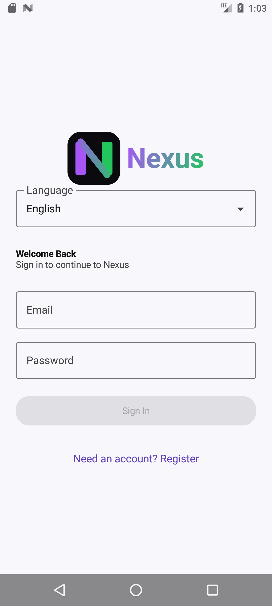
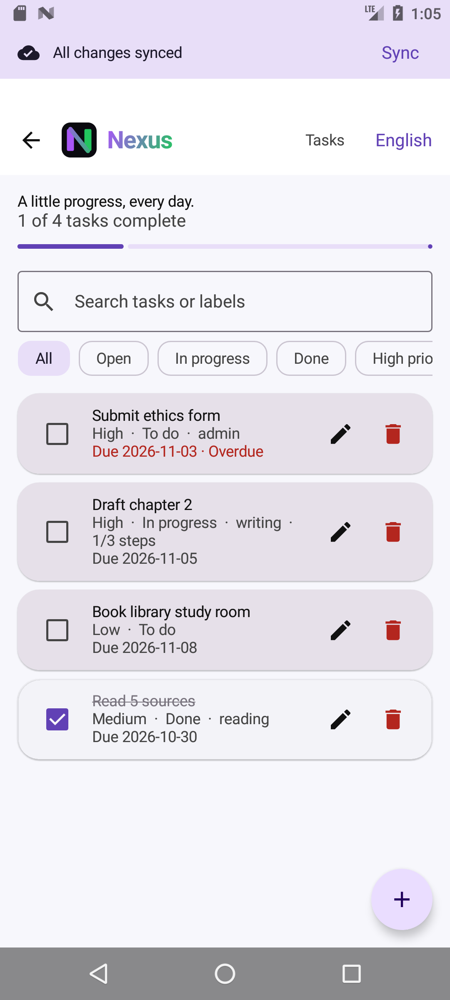
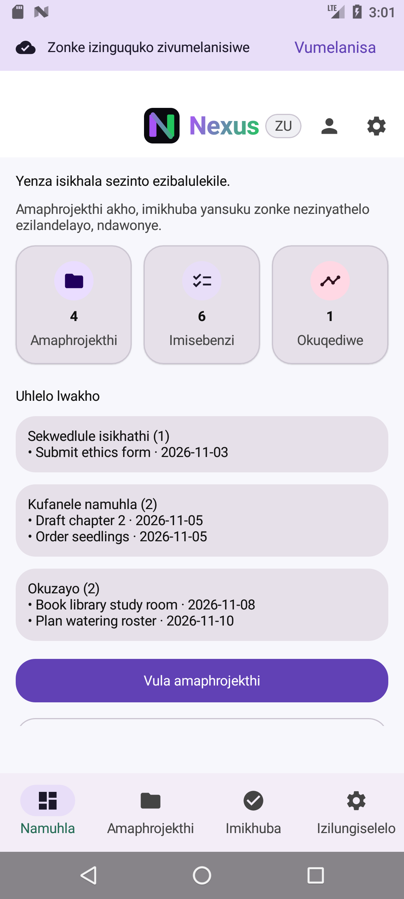
Nexus · Documentation package · Deliverable 05
Backend and Data Schema
Entities, relationships, key fields, storage locations and data flows on the server and the device.
| Document ID | NX-05-DATA |
|---|---|
| Version | 2.0 |
| Date | 2026-11-05 |
| Status | Draft for team review (not approved) |
| Intended readers | Developers changing the API or Room schema; assessor checking the data design |
| Evidence baseline | Branch New-Changes: commit 716bedb plus the uncommitted Part 3 working-tree changes of 2026-11-05 (v1.0 analysed 3a3f275) |
| Prepared by | AI-assisted (Claude Code) from repository evidence; team review pending |
| Approved by | Unknown No approval recorded |
Evidence labels used in this document: Implemented verified in code, configuration or test output; Inferred reasoned from evidence but not executed; Recommendation proposed, not implemented; Open question needs a decision; Unknown no evidence available; Estimate planning figure, not a measurement.
1Storage overview
| Store | Location | Contents | Protection |
|---|---|---|---|
| API document store | DATABASE_PATH (default backend/nexus-data.json; /data/nexus-data.json in the container) | users, projects, tasks, habits, sync receipts | File-system permissions only; not encrypted at rest. Git-ignored. |
| Room database | App-private nexus_database, schema version 5 | Cached projects, tasks, habits, dashboard counts, pending upload queue | App sandbox; excluded from Android backup since v2.0 (AUD-05 fixed) |
| Encrypted preferences | nexus_secure_prefs | JWT (jwt_token) | AES-256 GCM/SIV via AndroidX Security; excluded from backup |
| Plain preferences | Settings store; cached_profiles | theme_mode, notifications_enabled, language, language-sync flag; profile JSON per owner (profile:<owner>) | App sandbox; excluded from backup |
2Server data model
server.js keeps four in-memory Maps, persisted as one JSON document { users: [...], projects: {userId: [...]}, tasks: {userId: [...]}, habits: {userId: [...]} }. Ownership is structural: every collection is keyed by the owner's user id, so there are no cross-user references Implemented.
projectId; checklist items and labels are embedded arrays.2.1User (ENT-USER)
| Field | Type | Rules |
|---|---|---|
id | UUID string | randomUUID() at registration; JWT sub |
email | string | Valid email, stored lower-case since v2.0; unique and matched case-insensitively Implemented |
displayName | string | Non-empty |
passwordHash | string | bcrypt cost 12. A non-bcrypt value is compared as plain text once and then rehashed (AUD-16). Never returned by the API. |
language | string | Default "en"; any string accepted by the API, the app sends en/zu/tn |
notificationsEnabled | boolean | Default true |
syncOperations | string[] | Applied operationIds; grows without limit (AUD-07) |
googleSub (v2.0) | string | Google account subject; set on first Google sign-in. Accounts created by Google have no passwordHash. |
deviceTokens (v2.0) | string[] | FCM registration tokens, at most 10, newest last; a token is removed from any other account when registered |
2.2Project (ENT-PROJECT)
| Field | Type | Rules |
|---|---|---|
id | UUID string | Server-generated (REST) or device-generated (sync) |
name | string | Non-empty |
description | string | null | Optional |
createdAt, updatedAt | ISO-8601 timestamp | Set by the server |
Deleting a project deletes its tasks (REST and sync paths) Implemented.
2.3Task (ENT-TASK)
| Field | Type | Rules |
|---|---|---|
id, projectId | UUID strings | The project must belong to the same user (404 on REST, 409 on sync) |
title | string | Non-empty |
description | string | null | Optional |
dueDate | string | null | Pattern yyyy-MM-dd (format only; the calendar date is not checked) |
priority | enum | NONE (default), LOW, MEDIUM, HIGH |
status | enum | TODO (default), IN_PROGRESS, DONE |
isCompleted | boolean | Derived: always status === "DONE" after a write |
labels | string[] | Free text |
checklist | {id?, title, isCompleted?}[] | Title non-empty |
createdAt, updatedAt | ISO-8601 | Server-set |
2.4Habit (ENT-HABIT)
| Field | Type | Rules |
|---|---|---|
id | UUID string | |
name | string | Non-empty |
description | string | null | Optional |
frequency | enum | DAILY (default), WEEKLY, CUSTOM |
targetDays | number[] | Accepted but not used by the app's scoring |
completedDates | string[] | yyyy-MM-dd by convention; no format validation on the server |
createdAt (+ updatedAt via sync) | ISO-8601 |
3Device (Room) schema, version 5
| Table | Primary key | Columns |
|---|---|---|
projects | id | userId, name, description, createdAt, updatedAt |
tasks | id | userId, projectId, title, description, isCompleted, dueDate, priority, status, labels (JSON), checklist (JSON), createdAt, updatedAt |
habits | id | userId, name, description, frequency, targetDays (JSON), completedDates (JSON), createdAt |
dashboard | userId | projects, tasks, activity (counts) |
pending_changes | sequence (autoincrement) | userId, operationId (UUID), resource (projects|tasks|habits), entityId, action (create|update|delete), payload (JSON) |
List columns are stored as Gson JSON strings by TaskConverters. userId is the cache owner id: the JWT sub, or a hash of the token if no sub exists. No foreign keys or indices are declared Implemented.
3.1Migration history
| Migration | Change | Data effect |
|---|---|---|
| 1→2, 2→3 | Not present in code (version 2 added task fields, per commit 8b31aa3) | Upgrading from v1 or v2 would fail to open the database (AUD-12) |
| 3→4 | Adds userId to projects, tasks and habits; rebuilds dashboard keyed by user | Deletes all cached rows (they could not be attributed to an owner) |
| 4→5 | Creates pending_changes | Keeps existing rows |
4Data flows
| ID | Flow | Path |
|---|---|---|
| DF-01 | Local write | ViewModel → Repository → SyncManager.save() → Room entity + pending_changes (one transaction). See SEQ-01. |
| DF-02 | Upload | pending_changes (ordered) → POST /api/sync → in-memory map → saveDatabase() (.tmp then rename) → receipt stored → queue row deleted |
| DF-03 | Refresh | GET /projects + GET /projects/:id/tasks for each project (N+1 requests) → replaces the account's cached projects and tasks → dashboard counts computed on the device |
| DF-04 | Account deletion | DELETE /users/me → server removes the user and all collections → app purges that owner's Room rows and queue under the sync mutex |
| DF-06 | Real-time push (v2.0) | Successful /api/sync → notifyUser() → FCM multicast to the user's other device tokens → NexusMessagingService shows a notification and refreshes the Room cache |
| DF-07 | Google SSO (v2.0) | Credential Manager → Google ID token → /api/auth/google → Google key verification → user found/created/linked → Nexus JWT |
| DF-05 | Export | Habits (cache or API) → CSV string in memory → Android share sheet. Nothing is written to shared storage. |
5Data retention and privacy notes
- Personal data held: email, display name, password hash, the user's own content and, since v2.0, the Google account subject and FCM device tokens. Google (sign-in) and Firebase (push delivery) act as service providers; no analytics or ads Implemented.
- Retention: data is kept until the user deletes it or the account. There are no server-side backups or expiry Implemented.
- Logs: Pino redacts password fields,
passwordHash,tokenand the authorization header. pino-http's default serializers do not log request bodies, so emails in bodies do not reach the logs, but remote IP addresses are logged Implemented.
Nexus · Documentation package · Deliverable 06
Implementation Plan
Completed work with evidence, and remaining work ordered by dependency with priorities, estimates, acceptance criteria and tests.
| Document ID | NX-06-PLAN |
|---|---|
| Version | 2.0 |
| Date | 2026-11-05 |
| Status | Draft for team review (not approved) |
| Intended readers | Development team planning the final PoE; assessor reviewing project management |
| Evidence baseline | Branch New-Changes: commit 716bedb plus the uncommitted Part 3 working-tree changes of 2026-11-05 (v1.0 analysed 3a3f275) |
| Prepared by | AI-assisted (Claude Code) from repository evidence; team review pending |
| Approved by | Unknown No approval recorded |
Evidence labels used in this document: Implemented verified in code, configuration or test output; Inferred reasoned from evidence but not executed; Recommendation proposed, not implemented; Open question needs a decision; Unknown no evidence available; Estimate planning figure, not a measurement.
1Completed work
This history is reconstructed from PROJECT_IMPROVEMENTS.md, merged pull requests and commit messages. Dates are commit or merge dates Implemented.
| Date | Increment | Evidence | Requirements |
|---|---|---|---|
| 2026-08-23 | Initial Android app with auth integration, secure token storage, nav flow, splash animation | Commits 65385b2, 0496717, 964cbf5 | FR-01, FR-02, FR-19 |
| 2026-09-22 | CI workflow, Room read cache, task due date / priority / status / labels / checklist, dashboard insights, auth validation | PRs #10–#16; commit 8b31aa3 | FR-09, FR-11 |
| 2026-09-23 | Backend remediation: mutex + atomic writes, Zod validation, JWT secret check, bcrypt, rate limiting, health check, Pino; task detail screen | PR #23; server.test.js | NFR-01, NFR-04, FR-12 |
| 2026-09-24 | Android structural remediation: six repositories, manual DI, HabitScoring domain, feature packages, type-safe routes, shared fakes | PR #24 | TR-01 to TR-03, FR-14 |
| 2026-09-26 | UI refinement: theme colours, logo component | PR #25 | NX-04-DES |
| 2026-11-05 | Part 3 / v2.0: Google SSO, FCM push, WorkManager reminders, full zu/tn localisation, audit fixes (AUD-01/02/03/05/06/10/11/16/17/18/21), Settings crash fix, release signing, Play Store kit, recaptured screenshots | 716bedb + uncommitted working tree | FR-21, FR-22, FR-23, FR-18 |
| 2026-10-04 | Offline upload queue and /api/sync, sync banner, conflict review, project search, task filters, zu/tn resources, configurable NEXUS_API_URL, HTTPS-only release, Dockerfile/compose | PR #26 (commit 3a3f275) | FR-16, FR-17, FR-18, TR-07 |
2Remaining work
Tasks are ordered so that each depends only on tasks above it. Priority: P0 blocks a credible release or submission, P1 is needed before real users, P2 is improvement. All effort figures are Estimate person-day estimates by the document author, not team commitments, and should be re-estimated by the team.
| ID | Task | Pri. | Depends on | Est. (days) | Acceptance criteria | Tests |
|---|---|---|---|---|---|---|
| IMP-01 | Restore GitHub Actions execution (resolve the account billing lock shown in run annotations) and re-run CI on main | P0 | None | 0.25 Estimate | Android CI and Backend CI both green on main at or after 3a3f275 | Existing CI jobs (CI-01, CI-02) |
| IMP-02 | Fix Zod 4 compatibility before merging PR #27: use error.issues; give z.record a key schema | P0 | IMP-01 | 0.5 Estimate | Backend tests pass on Zod 4; validation still returns 400 VALIDATION_ERROR | npm test; existing Zod tests |
| IMP-03 | Fail safe on an unreadable data file: refuse to start (or start read-only) instead of starting empty | P0 | None | 0.5 Estimate | A corrupt nexus-data.json stops the process with a clear log line and leaves the file untouched | New Jest test with a corrupt fixture (AUD-01) |
| IMP-04 | Correct the auth error messages: 401 at login gives "Email or password is incorrect"; 409 gives "Email already registered"; 429 gives "Too many attempts" | P0 | None | 0.5 Estimate | Each status shows its own message; session expiry still shows the expiry text elsewhere | AuthViewModelTest cases per status (AUD-18) |
| IMP-05 | Remove or fix the root docker-compose.yml; document backend/compose.yaml as the single container path | P1 | None | 0.25 Estimate | docker compose up from the documented path persists data across restarts | Backend CI smoke test plus a manual restart check (AUD-02) |
| IMP-06 | Add app.set("trust proxy", 1) (configurable) for TLS-proxy hosting | P1 | IMP-05 | 0.25 Estimate | The rate limit keys on the client IP behind the chosen proxy | Supertest with X-Forwarded-For (AUD-06) |
| IMP-07 | Provision the hosted API and release signing; set the NEXUS_API_URL repository variable | P1 | IMP-01, IMP-03, IMP-05, IMP-06 | 1–2 Estimate | /health reachable over HTTPS; signed release APK/AAB produced by CI | Release checklist in NX-07-CICD (AUD-08) |
| IMP-08 | Due-date reminders, or hide the switch (decision OQ-01) | P1 | OQ-01 | 0.25 (hide) / 3–5 (build) Estimate | The switch either has a visible effect or is not shown | Unit test on the scheduler, or UI test that the switch is absent (AUD-10) |
| IMP-09 | Exclude the Room database from backup, or document the choice | P1 | None | 0.25 Estimate | backup_rules.xml and data_extraction_rules.xml exclude nexus_database | Manual adb shell bmgr check (AUD-05) |
| IMP-10 | Enforce lint in CI (ktlintCheck, detekt) and fix the ktlint parse failure; delete the placeholder blank.yml and build-verification.log | P1 | IMP-01 | 1 Estimate | CI fails on lint violations; the log file is no longer tracked | CI run (AUD-13) |
| IMP-11 | Accessibility pass: TalkBack walkthrough, contrast measurement, 48 dp targets | P1 | None | 1–2 Estimate | Results recorded; issues fixed or logged | Accessibility Scanner report; Compose semantics tests |
| IMP-12 | Undo for list deletes of projects, tasks and habits | P2 | None | 1 Estimate | Snackbar "Undo" restores the item before upload | ViewModel tests |
| IMP-13 | CSV export escaping (RFC 4180 quoting) | P2 | None | 0.25 Estimate | A habit named Read, write exports as one quoted field | SettingsViewModelTest (AUD-11) |
| IMP-14 | Fix the habit completion-rate formula: count habit-date pairs | P2 | None | 0.25 Estimate | Two daily habits both done for 30 days gives 100% | HabitScoringTest (AUD-17) |
| IMP-15 | Enable Room exportSchema and add MigrationTestHelper tests for 3→4→5 | P2 | None | 1 Estimate | Schema JSON committed; migration tests pass | Instrumented tests (AUD-12) |
| IMP-16 | Documentation corrections: README contents links, admin role label, translation claim, recaptured screenshots | P2 | IMP-07 | 0.5 Estimate | Every README link resolves; screenshots match their file names | Link check (AUD-09, AUD-21) |
| IMP-17 | Complete feature-screen localisation (zu/tn) | P2 | None | 3–5 Estimate | No hard-coded user-facing English strings remain in ui/ | Lint HardcodedText; pseudo-locale run (FR-18) |
| IMP-18 | Final-PoE features (Google SSO, push notifications), as decided in OQ-04 | P2 | IMP-07, OQ-04 | Unknown | Defined per feature in docs/POE_PART_2_ADDENDUM.md | Server and end-to-end tests required by the addendum |
Total for P0 and P1 excluding IMP-08 "build" and IMP-18: about 5–7 person-days Estimate.
3Definition of done
Adopted from the quality checklist in PROJECT_IMPROVEMENTS.md: API models and validation first; a Room migration for any schema change; loading, offline, retry, unauthorised and validation states covered; ViewModel unit tests plus instrumented coverage of the main path; accessibility checked; README and the improvements log updated Implemented. Recommendation Add "CI green on the PR" once IMP-01 is done.
4Status at v2.0 (2026-11-05)
| Task | Status | Evidence or remaining action |
|---|---|---|
| IMP-01 | Open (team) | Needs the GitHub account billing lock resolved; then re-run CI. Workflows moved to Node 22. |
| IMP-02 | Done | Zod 4.6.7 adopted; 29/29 backend tests pass. PR #27 can be closed as superseded. |
| IMP-03 | Done | Refuses to start; .bak copy kept; 3 tests in part3.test.js. |
| IMP-04 | Done | AuthErrorMessagesTest; verified on device. |
| IMP-05 | Done | Root docker-compose.yml uses a named volume at /data; docker compose config valid. Not run (no Docker daemon). |
| IMP-06 | Done | TRUST_PROXY env; not covered by a test. |
| IMP-07 | Partly done | Signing config, upload key and Play kit done. API hosting and Play Console upload are team actions. |
| IMP-08 | Done (built) | Reminders and push implemented (FR-22, FR-23). |
| IMP-09 | Done | Backup rules exclude database. |
| IMP-10 | Done (ktlint) | Codebase brought to zero ktlint violations (592 at the start: auto-format, line wrapping, constant renames, and two rules disabled in .editorconfig with recorded reasons). ktlintCheck now runs in Android CI before the tests. blank.yml and build-verification.log removed. detekt is not gated because the tool crashes in this toolchain (AUD-23). |
| IMP-11 | Open | No TalkBack or contrast audit recorded. |
| IMP-12 | Done (alternative) | Every delete (project, task, habit) now asks for confirmation, and the project dialog warns that its tasks are deleted too. Verified on device (screenshot 21). Undo was not implemented. |
| IMP-13 | Done | CsvRowTest. |
| IMP-14 | Done | New HabitScoringTest case. |
| IMP-15 | Open | Room schema export and migration tests not added. |
| IMP-16 | Done | README rewritten (contents links fixed, release notes, AI use); screenshots recaptured. |
| IMP-17 | Done | 210 strings × 3 languages; native-speaker review still recommended. |
| IMP-18 | Done (code) | SSO and push implemented; need Google Cloud and Firebase projects to run end to end. |
Nexus · Documentation package · Deliverable 07
CI/CD and Release
Verified pipeline behaviour, build and test gates, run history, environments and the release checklist.
| Document ID | NX-07-CICD |
|---|---|
| Version | 2.0 |
| Date | 2026-11-05 |
| Status | Draft for team review (not approved) |
| Intended readers | Developers and whoever performs releases; assessor checking delivery automation |
| Evidence baseline | Branch New-Changes: commit 716bedb plus the uncommitted Part 3 working-tree changes of 2026-11-05 (v1.0 analysed 3a3f275) |
| Prepared by | AI-assisted (Claude Code) from repository evidence; team review pending |
| Approved by | Unknown No approval recorded |
Evidence labels used in this document: Implemented verified in code, configuration or test output; Inferred reasoned from evidence but not executed; Recommendation proposed, not implemented; Open question needs a decision; Unknown no evidence available; Estimate planning figure, not a measurement.
1Pipeline inventory
Three GitHub Actions workflows live in .github/workflows/. Every workflow sets permissions: contents: read Implemented. No deployment (CD) job exists; artifacts are built and uploaded, but nothing is deployed Implemented.
| ID | Workflow | Triggers | Jobs and gates |
|---|---|---|---|
| CI-01 | android-ci.yml "Android CI" | Push to main, master, release/**; PR to main/master; manual | backend-test (15 min): Node 22 (since v2.0; was 20), npm ci, npm test with a test-only JWT secret.build (30 min): JDK 17 Temurin, Gradle setup, wrapper validation, ktlintCheck (since v2.0), ./gradlew test, :app:assembleDebug, upload nexus-debug-apk (14 days). Only if repository variable NEXUS_API_URL is set: assembleRelease bundleRelease and upload nexus-release-artifacts. |
| CI-02 | backend-ci.yml "Backend CI" | Same branches, filtered to backend/** and its own file; manual | Node 22 tests, then docker build, run the container with NODE_ENV=production, wait 3 s, and require HTTP 200 from /health; the container is always removed. |
| CI-03 | blank.yml "CI" | (removed in v2.0) | GitHub starter template that only echoed text; deleted (AUD-13). |
Not gated in CI: detekt (AUD-23), Kover coverage thresholds, instrumented (androidTest) tests, and dependency vulnerability scanning Implemented. Dependabot opened PR #27, but the repository has no .github/dependabot.yml, so its configuration lives in GitHub settings Unknown.
2Verified run history
Retrieved with gh run list / gh run view on 2026-11-05 (78 most recent runs: 49 success, 29 failure).
| Date (UTC) | Trigger | Result | Cause (from run logs / annotations) |
|---|---|---|---|
| 2026-09-22 | Several pushes/PRs | Android CI mixed pass/fail | Early iterations; not analysed further |
| 2026-09-24 07:17 | Push to main (PR #24 merge) | Android CI success | Last successful Android CI on main |
| 2026-09-26 18:23 | PR #25 and its merge | All workflows failed in 3–5 s | Annotation: "The job was not started because your account is locked due to a billing issue." |
| 2026-10-04 18:13 | PR #26 and merge (baseline 3a3f275) | All workflows failed in 3–4 s | Same annotation; jobs never started. The baseline code has never been verified by CI. |
| 2026-10-31 08:37 | Dependabot PR #27 (zod 3.25.76 → 4.6.6) | Android build job passed; both backend test jobs failed | TypeError: Cannot read properties of undefined (reading 'map') at server.js:133. The Docker smoke test did not run. See AUD-03. |
The Backend CI Docker smoke test (CI-02) has no successful run in the retrieved history Implemented. Its correctness is Inferred from reading the workflow only.
3Local verification for this package
| Command | Result |
|---|---|
cd backend; npm test at v1.0 (zod 3.25.76) | 2 suites, 16/16 passed, 31.7 s |
cd backend; npm test at v2.0 (zod 4.6.7) | 3 suites, 29/29 passed; npm audit --omit=dev: 0 vulnerabilities |
./gradlew :app:testDebugUnitTest --rerun at v1.0 (JDK 21 runtime) | BUILD SUCCESSFUL; 7 classes, 32/32 passed |
./gradlew :app:testDebugUnitTest at v2.0 | BUILD SUCCESSFUL; 10 classes, 42/42 passed |
./gradlew :app:connectedDebugAndroidTest at v2.0 (Android 7.0 emulator) | 16/16 passed with the API stopped; 14/16 when a live API was reachable (AUD-22) |
assembleRelease -PNEXUS_API_URL=https://api.nexus.invalid/api/ at v2.0 | APK signed with the upload key, verified by apksigner (APK Signature Scheme v2). A configuration-cache error in the HTTPS guard was fixed, after which the build is SUCCESSFUL; an http:// URL is rejected. The placeholder build was deleted. |
assembleDebug at v2.0 | Succeeded; installed and exercised on the emulator |
| Docker build | Not run Unknown. The Docker daemon was not running; docker compose config validates both compose files. |
Details per suite are in NX-09-TDH.
4Environments
| Environment | API URL | Status |
|---|---|---|
| Local emulator | http://10.0.2.2:5263/api/ (debug default) | Implemented Documented in docs/ONLINE_OFFLINE.md |
| Local phone on LAN | -PNEXUS_API_URL=http://<LAN-IP>:5263/api/ | Implemented Debug builds only |
| CI | None (tests use Supertest in process; smoke test uses localhost) | Implemented |
| Staging / production | None | Implemented Not provisioned; the README states the earlier production hostname "was not a configured service" (CON-02) |
5Release process
No release has been published: gh release list returns nothing and versionCode is 1 Implemented. The Gradle build enforces two release rules: NEXUS_API_URL must start with https:// (preReleaseBuild check), and release builds minify and shrink resources Implemented. Since v2.0 a release signing config reads keystore.properties (git-ignored) or NEXUS_KEYSTORE_* environment variables, and the upload key was created with scripts/create-upload-keystore.ps1 (AUD-08 fixed). CI does not have the key yet, so CI release artifacts remain unsigned until the secrets are added.
5.1Release checklist
Items marked Recommendation are recommendations for the first release. The others restate rules the repository already enforces or documents.
- CI (CI-01, CI-02) is green on the release commit; this requires IMP-01. Recommendation
- Backend tests pass locally:
npm ci && npm test. - Android unit tests pass:
./gradlew test. Instrumented tests pass on at least one API 24 and one current device. Recommendation - Run the offline acceptance check in
docs/ONLINE_OFFLINE.md(six steps) against the target API. - Increment
versionCode/versionNameinapp/build.gradle.kts(2 / 2.0.0 for the final PoE). Settings showsBuildConfig.VERSION_NAME. - Hosted API is healthy over HTTPS with persistent storage and a stable
JWT_SECRET(NX-11-DEP). - Set repository variable
NEXUS_API_URLto the HTTPS URL ending in/. - Sign the APK/AAB with the release keystore held outside the repository (IMP-07). Recommendation
- Do not seed test accounts on a public host (AUD-14). Recommendation
- Add a dated entry to
PROJECT_IMPROVEMENTS.md; tag the commit and create a GitHub release with the signed artifacts. Recommendation
Nexus · Documentation package · Deliverable 08
Engineering Audit
Evidence-based findings with severity, confidence, affected area and recommended action, plus an addendum verifying earlier remediation.
| Document ID | NX-08-AUD |
|---|---|
| Version | 2.0 |
| Date | 2026-11-05 |
| Status | Draft for team review (not approved) |
| Intended readers | Development team prioritising fixes; assessor reviewing quality assurance |
| Evidence baseline | Branch New-Changes: commit 716bedb plus the uncommitted Part 3 working-tree changes of 2026-11-05 (v1.0 analysed 3a3f275) |
| Prepared by | AI-assisted (Claude Code) from repository evidence; team review pending |
| Approved by | Unknown No approval recorded |
Evidence labels used in this document: Implemented verified in code, configuration or test output; Inferred reasoned from evidence but not executed; Recommendation proposed, not implemented; Open question needs a decision; Unknown no evidence available; Estimate planning figure, not a measurement.
1Scope and method
This audit covers the repository at the evidence baseline: Android source, backend source, build and CI configuration, tests, and existing documentation. The methods were code reading, running both test suites, retrieving GitHub Actions run history, and one targeted reproduction (AUD-01) in a scratch directory.
Not a security audit. No penetration test, threat model, dependency vulnerability scan (npm audit/OWASP) or formal security review was performed. Security-relevant observations below come from reading code and must not be read as a security assessment.
1.1Ratings
- High: likely data loss, broken core function, or blocked release. Medium: real user or operational impact under plausible conditions. Low: limited impact or quality debt. Info: observation.
- Confidence: Verified (reproduced or shown in logs/tests), High (unambiguous in code/config), Medium (depends on environment or library behaviour not exercised here).
2Summary
| Severity | Count | IDs |
|---|---|---|
| High | 3 | AUD-01, AUD-03, AUD-04 |
| Medium | 6 | AUD-02, AUD-05, AUD-06, AUD-08, AUD-18, AUD-19 |
| Low | 12 | AUD-07, AUD-09, AUD-10, AUD-11, AUD-12, AUD-13, AUD-14, AUD-16, AUD-17, AUD-21, AUD-22, AUD-23 |
| Info | 2 | AUD-15, AUD-20 |
Strengths observed: transactional offline outbox with idempotent server receipts; consistent per-account data scoping on both tiers; strict startup secret check; atomic file writes; standard error shape; injected fakes that make ViewModels testable; honest scoping in the existing docs (the addendum explicitly forbids claiming unbuilt features).
3Findings
| ID | Finding and evidence | Severity / confidence | Area | Recommended action |
|---|---|---|---|---|
| AUD-01 | Unreadable data file is silently replaced with an empty store. loadDatabase() catches a JSON parse error, logs it, and continues with empty maps; the next write overwrites the file. Reproduced 2026-11-05: a truncated file loaded as 0 users and was rewritten as {"users":[],...} by the first saveDatabase(). | High / Verified | Backend persistence | Exit non-zero on a parse failure; keep a .bak before each rename. IMP-03 |
| AUD-03 | Open Dependabot PR #27 (Zod 4) breaks all request validation. validate() reads result.error.errors, which is undefined on Zod 4. CI run 2026-10-31 shows TypeError … reading 'map' at server.js:133, so invalid input would return 500 instead of 400. z.record(z.unknown()) in syncSchema also uses the single-argument form that Zod 4 changed (not verified). | High (if merged) / Verified | Backend dependencies | Do not merge as-is; migrate to error.issues and z.record(z.string(), z.unknown()). IMP-02 |
| AUD-04 | The current code has never passed CI. Every workflow run for PRs #25 and #26 and their merges failed in 3–5 s with the annotation "job was not started because your account is locked due to a billing issue". The last green Android CI on main was 2026-09-24 (CI-RUN-GREEN). | High / Verified | Delivery | Resolve the account lock and re-run CI on main. IMP-01 |
| AUD-02 | Root docker-compose.yml conflicts with the Docker image. It sets DATABASE_PATH=/usr/src/app/nexus-data.json and bind-mounts a single host file there. The image runs as node with WORKDIR /app, so the server cannot create nexus-data.json.tmp in the root-owned /usr/src/app, and renaming over a bind-mounted file is not possible. If the host file does not exist, Docker creates a directory in its place. backend/compose.yaml (named volume at /data) is consistent. | Medium / Medium (not executed; Docker daemon unavailable) | Deployment config | Delete the root file or align it with backend/compose.yaml. IMP-05 |
| AUD-05 | Cached user content is included in Android backups. allowBackup="true"; the backup and extraction rules exclude only sharedpref, so nexus_database (projects, tasks, habits, pending queue) goes to cloud backup and device transfer. | Medium / High | Android privacy | Exclude the database domain, or document the decision. IMP-09 |
| AUD-06 | Auth rate limiting will misbehave behind a TLS proxy. trust proxy is not set, so req.ip is the proxy address and all users would share one 10-per-15-min bucket. Hosting requires a TLS proxy (OPS-01). | Medium / Medium | Backend security / ops | Configure trust proxy for the chosen host. IMP-06 |
| AUD-08 | No release signing configuration. app/build.gradle.kts defines no signingConfig, so CI release artifacts would be unsigned and could not be installed or published. | Medium / High | Release | Add signing from CI secrets. IMP-07 |
| AUD-18 | Misleading sign-in and registration errors. toApiError() maps every 401/403 to SessionExpired, so a wrong password shows "Your session has expired. Please log in again." A 409 (email taken) and a 429 (rate-limited) both show "Something went wrong. Please try again." | Medium / High | Android auth UX | Map auth-endpoint statuses separately. IMP-04 |
| AUD-19 | One rejected operation blocks the whole upload queue. Uploads stop at the first failure; a 400 or 409 needs the user to choose "Discard item edits". Until then no later change for any item uploads, though they stay saved locally. | Medium / High | Sync design | Keep the ordering guarantee per entity only, or surface the blocked item by name in Review. Document it in the user manual (done in NX-10-UM). |
| AUD-07 | Throughput is bounded by one global lock. Every authenticated handler, including bcrypt cost-12 hashing and full-file rewrites, runs under dbMutex. Sync receipts (syncOperations) grow without limit, and dashboard refresh makes one request per project. | Low / High | Backend performance | Hash outside the lock; cap or expire receipts; add a bulk tasks endpoint. Revisit with the SQLite plan. |
| AUD-09 | Documentation drift. README contents links to five sections that do not exist (Roadmap, Continuous Integration, Part 2 PoE Evidence, Security and Release Notes, Contributing). It claims "MyMemory translation fallback", but OnlineLanguageRepository has no callers. It labels a test user "Global system administrator" though no roles exist. It lists full multi-language support, which is partial. The project list header shows a stray "?" (encoding). | Low / High | Documentation | IMP-16 |
| AUD-10 | "Task due-date reminders" switch has no effect. No notification permission, channel, WorkManager or AlarmManager code exists; the switch only stores a preference. | Low / High | Android feature | Hide it, or implement reminders (OQ-01, IMP-08). |
| AUD-11 | CSV export is not escaped. Rows are "${name},${frequency},$date"; commas, quotes or newlines in a habit name corrupt the file. | Low / High | Android export | IMP-13 |
| AUD-12 | Room migrations are untested and incomplete. exportSchema = false; there are no migrations for 1→2 or 2→3, and no destructive fallback, so a device with a v1/v2 database would fail to open it. There are no migration tests. | Low (no public release yet) / High | Android data | IMP-15 |
| AUD-13 | Lint is configured but not enforced. ktlint, detekt and Kover are in the build, but CI runs only test/assemble. The committed build-verification.log (UTF-16) records a failed local ktlintFormat ("KtLint failed to parse file … app/build.gradle.kts"). blank.yml is a starter template. | Low / High | Code quality / CI | IMP-10 |
| AUD-14 | Test account passwords are committed. docs/seed_test_users.ps1 and the README contain plain-text passwords for three seed accounts. This is acceptable for local development, but the accounts must never be seeded on a hosted API. | Low / High | Security hygiene | Release checklist item REL-09; consider generating the passwords at seed time. |
| AUD-16 | Minor auth weaknesses. Login returns before any bcrypt work for unknown emails, so timing could reveal registered emails. A legacy path accepts a stored non-bcrypt value as a plain-text password. Email uniqueness is case-sensitive. | Low / High | Backend auth | Compare against a dummy hash; remove the legacy path once no such records exist; normalise emails to lower case. |
| AUD-17 | Habit completion rate is understated with several habits. HabitScoring counts distinct dates across all habits but sums the schedule per habit. Two daily habits both done for 30 days score 50%. Streaks also count a day if any habit was done. | Low / High | Domain logic | IMP-14 |
| AUD-21 | UI screenshot set does not show the screens it names. docs/screenshots/ui-audit/ holds 9 files but only 4 distinct images (MD5): dashboard-offline, profile, project-list and settings are identical. habits, project-list-skeleton, login and register are also skeleton states, and splash.png shows the Login screen. | Low / Verified | Evidence / documentation | Recapture before submission; do not present these files as evidence of named screens. IMP-16 |
| AUD-22 | Two instrumented tests depend on the API being unreachable. SplashIntroScreenTest plants a fake token. When a live API is reachable at 10.0.2.2:5263 it answers 401, the dashboard signs out, and the "Log Out"/"Retry" assertions fail. Observed 2026-11-05: 14/16 with the API running, 16/16 with it stopped. (Found during v2.0 verification.) | Low / Verified | Test reliability | Inject fake repositories into NexusNavHost for UI tests instead of relying on network state. |
| AUD-23 | detekt cannot run. ./gradlew :app:detekt fails with an internal error whose message is only "25.0.3". This is consistent with detekt 1.23.8 not supporting the current Kotlin/JDK toolchain. (Found during v2.0 lint work.) | Low / Verified | Code quality tooling | Upgrade to detekt 2.x when it supports this toolchain, or remove the plugin. |
| AUD-15 | Dead code. AuthSession.OFFLINE_TOKEN_PREFIX handling remains after synthetic offline auth was removed; setOnSessionCleared is never registered; OnlineLanguageRepository and languageInstance are unused. | Info / High | Android | Remove during the next refactor. |
| AUD-20 | Inert or ordering quirks in the API. registrationEnabled in /app/config is not enforced. Validation runs before authentication on several routes, so an unauthenticated request with a bad body gets 400 instead of 401. CORS is * (documented as intentional). | Info / High | Backend | Address when roles or a web client are introduced. |
4Addendum: verification of earlier remediation
PROJECT_IMPROVEMENTS.md records two remediation passes (2026-09-23 backend, 2026-09-24 Android). Each claim was checked against the baseline code and test evidence.
| Claimed remediation | Code evidence | Test evidence (2026-11-05) | Result |
|---|---|---|---|
AsyncMutex + atomic .tmp/rename writes | AsyncMutex, withDb, saveDatabase() | "Concurrent PATCH requests …" passed | Confirmed; see AUD-01 for the remaining load-path gap |
| Zod validation on all write endpoints | Schemas for register, login, profile, password, project, task, habit, sync | Validation tests passed (Zod 3) | Confirmed on Zod 3; at risk with Zod 4 (AUD-03) |
| JWT secret ≥ 32 chars, 24 h expiry, bcrypt 12, 10/15 min rate limit | server.js lines for each | Startup-refusal, expired-token and 429 tests passed | Confirmed; proxy caveat AUD-06 |
/health + Pino with redaction | Routes and redact.paths | Health test passed | Confirmed |
Repository split, manual DI, HabitScoring, type-safe routes, shared fakes | data/*Repository.kt, NexusApp, domain/, Route, test/fakes/ | 32/32 unit tests passed | Confirmed |
| Synthetic offline authentication removed | No code mints offline tokens | Not separately tested | Confirmed, with leftover parsing code (AUD-15) |
5Addendum B: remediation in v2.0 (2026-11-05)
Part 3 fixed the findings below. Each fix was verified as stated; "not executed" means it was checked by reading only.
| Finding | Status | Fix and verification |
|---|---|---|
| AUD-01 | Fixed | Unreadable file: refuses to start, file untouched, .bak kept on every save. 3 Jest tests, including a real process start. |
| AUD-02 | Fixed (config) | Root compose uses a named volume at /data; validated with docker compose config; not run. |
| AUD-03 | Fixed | error.issues, two-argument z.record; Zod 4.6.7 installed; 29/29 tests. |
| AUD-04 | Open (team) | Account billing lock; workflows updated to Node 22. |
| AUD-05 | Fixed | database domain excluded from backup and transfer. |
| AUD-06 | Fixed | TRUST_PROXY setting; not tested. |
| AUD-08 | Fixed | Signing config from keystore.properties or env; upload key created; signed APK verified with apksigner (see NX-07-CICD). |
| AUD-09 | Mostly fixed | README rewritten; stray "?" replaced; the admin label removed. The unused MyMemory client remains (AUD-15). |
| AUD-10 | Fixed | Reminders implemented (FR-23); verified on device. |
| AUD-11 | Fixed | RFC 4180 quoting; CsvRowTest. |
| AUD-16 | Mostly fixed | Dummy bcrypt compare for unknown emails; emails lower-cased. Legacy plain-text path kept for old records. |
| AUD-17 | Fixed | Per-habit completions; new unit test. |
| AUD-18 | Fixed | Status-specific auth messages; AuthErrorMessagesTest; verified on device. |
| AUD-13 | Fixed (ktlint) | 0 ktlint violations; ktlintCheck gated in Android CI; placeholder workflow and failing log removed. detekt: AUD-23. |
| AUD-15 | Fixed | Unused MyMemory client (LanguageApiService, OnlineLanguageRepository, languageInstance) and the offline-token parsing removed. |
| AUD-21 | Fixed | 20 new, correctly named screenshots in docs/screenshots/part3/. |
| New | Fixed | Settings crashed with "No ActivityResultRegistryOwner" after adding the permission request: MainActivity overrides LocalContext. Fixed by providing LocalActivityResultRegistryOwner; verified on device (crash buffer empty). |
Still open: AUD-04, AUD-07, AUD-12, AUD-14, AUD-19, AUD-20, AUD-22, AUD-23. Part 3 added the SSO and push endpoints; like the rest of the API, they were reviewed by reading code and testing, not by a security audit.
Nexus · Documentation package · Deliverable 09
Testing, Deployment and Handover
Test strategy and verified results, deployment summary, operational handover, known limitations and runbooks.
| Document ID | NX-09-TDH |
|---|---|
| Version | 2.0 |
| Date | 2026-11-05 |
| Status | Draft for team review (not approved) |
| Intended readers | Incoming maintainers and operators; assessor checking test evidence |
| Evidence baseline | Branch New-Changes: commit 716bedb plus the uncommitted Part 3 working-tree changes of 2026-11-05 (v1.0 analysed 3a3f275) |
| Prepared by | AI-assisted (Claude Code) from repository evidence; team review pending |
| Approved by | Unknown No approval recorded |
Evidence labels used in this document: Implemented verified in code, configuration or test output; Inferred reasoned from evidence but not executed; Recommendation proposed, not implemented; Open question needs a decision; Unknown no evidence available; Estimate planning figure, not a measurement.
1Test strategy
| Level | Tooling | What it covers | Runs in CI |
|---|---|---|---|
| Backend unit/integration | Jest + Supertest against the in-process Express app | Validation, auth, rate limiting, error shape, health, body limit, concurrency, sync replay, ownership and conflicts | Yes (CI-01, CI-02) |
| Android unit (JVM) | JUnit 4, MockK, coroutines-test, shared fakes | ViewModels (auth, dashboard, projects, settings), SyncManager, HabitScoring | Yes (./gradlew test) |
| Android instrumented | AndroidX JUnit, Compose UI test | Room offline persistence and ownership, splash with reduced motion, screenshot-capture wait conditions | No; needs an emulator or device |
| Container smoke | Docker + curl /health | Image builds and starts in production mode | Backend CI only; never succeeded (CI-02) |
| Manual acceptance | docs/ONLINE_OFFLINE.md six-step check; docs/DEMO_SCRIPT.md | Online/offline round trip, account switch, conflicts | No. No recorded results in the repository Unknown |
2Verified results
v2.0 results (2026-11-05, after the Part 3 changes): backend 29/29 (adds part3.test.js, 13 tests: SSO, push, device tokens, data-file safety, email case). Android unit 42/42 (adds AuthErrorMessagesTest 5, ReminderPlannerTest 2, CsvRowTest 2, one HabitScoringTest case). Instrumented 16/16 on an Android 7.0 emulator with the API stopped (AUD-22 explains the 14/16 run with a live API). The on-device walkthrough covered the sign-in error, all screens, three languages, the offline round-trip, the reminder and test notifications, and the Settings crash fix. The tables below are the v1.0 baseline results.
v1.0 run on 2026-11-05 against commit 3a3f275, before the Part 3 changes.
| ID | Suite | Tests | Result |
|---|---|---|---|
| TST-01 | tests/server.test.js: JWT secret refusal; concurrent updates; Zod validation (register, task enum/date, strict profile); error shape and production masking; expired token 401; 429 after 10 logins; /health; 413 over 1 MB | 11 | Passed |
| TST-02 | tests/sync.test.js: ordered replay with cascade delete; lost response plus restart does not duplicate or resurrect; cross-account project rejected; invalid payload 400 and no-auth 401; edit of deleted item gives 409 | 5 | Passed |
| ID | Class | Tests | Result |
|---|---|---|---|
| TST-03 | AuthViewModelTest | 9 | Passed |
| TST-04 | DashboardViewModelTest | 7 | Passed |
| TST-05 | SyncManagerTest: acknowledged operations removed in sequence; network failure keeps pending changes; pending writes block refresh overwrite; offline reads use cache while auth errors surface | 4 | Passed |
| TST-06 | HabitScoringTest | 4 | Passed |
| TST-07 | SettingsViewModelTest | 4 | Passed |
| TST-08 | ProjectListViewModelTest | 3 | Passed |
| TST-09 | ExampleUnitTest (template) | 1 | Passed |
| ID | Test | Count | Status |
|---|---|---|---|
| TST-10 | Instrumented: OfflinePersistenceTest (1), SplashIntroScreenTest (4), ScreenshotCaptureTest (10), ExampleInstrumentedTest (1) | 16 | Not run at v1.0; run at v2.0: 16/16 passed on an emulator |
| TST-11 | Docker build and smoke test | 1 | Not run; Docker daemon not running Unknown |
| TST-12 | Manual acceptance check (ONLINE_OFFLINE.md) | 6 steps | v2.0: steps 1–4 exercised on the emulator (offline create, then reconnect, then present on the server, no duplicate); steps 5–6 (account switch, cross-client delete conflict) not run Unknown |
2.1Coverage gaps
- No unit tests for
ProjectDetailViewModel,TaskListViewModel,HabitsViewModel,RemoteConfigViewModel, or the repositories' Room paths Implemented. - No backend tests for habits CRUD, password change, account deletion or the localisation/config endpoints Implemented.
- No Room migration tests (AUD-12); no tests for the defects in AUD-01, AUD-11, AUD-17 and AUD-18.
- A Kover report is configured but no coverage figure was produced or recorded Unknown.
3Deployment summary
Full procedures are in NX-11-DEP; release gating is in REL-CHECK. In short: run the API with a persistent JWT_SECRET and persistent storage (Node host or backend/compose.yaml), put it behind HTTPS, and build the app with -PNEXUS_API_URL=https://…/api/. No environment beyond local development exists today (CON-02).
4Operational handover
| Item | Current state |
|---|---|
| Source repository | github.com/jBlack-MC/Nexus-app; default branch main; working branch New-Changes Implemented |
| Repository owner / admins | Owner account jBlack-MC; other collaborators Unknown |
| Secrets in use | JWT_SECRET; since v2.0 also GOOGLE_CLIENT_ID (not secret), FIREBASE_SERVICE_ACCOUNT_BASE64 (secret), and the upload keystore at %USERPROFILE%\.nexus\nexus-upload.jks with its password in git-ignored keystore.properties on the development PC. Back these up. CI uses a hard-coded test-only JWT value Implemented |
| CI variables | NEXUS_API_URL (enables release artifacts). Whether it is set: Unknown. Release jobs were skipped in the retrieved runs Inferred |
| Hosted services | None Implemented |
| Monitoring and alerting | /health endpoint and Docker HEALTHCHECK. No external monitoring Implemented |
| Backups | None configured Implemented. See RB-04 |
| Open pull requests | #27 Dependabot Zod 4. Do not merge until IMP-02 is done |
5Known limitations
- Single-instance JSON store (CON-01); not suited to concurrent hosting or large data.
- No background sync while the app process is stopped (CON-03).
- Last-upload-wins for edits; no field-level merge (FR-17).
- Account recovery and collaboration are not implemented (NX-01-PRD scope). Google SSO and FCM push need the team's Google Cloud and Firebase projects before they work end to end.
- isiZulu and Setswana translations are AI-drafted and need first-language review (FR-18).
- Open defects: see NX-08-AUD.
6Runbooks
| ID | Situation | Steps |
|---|---|---|
| RB-01 | API exits at start with "FATAL: JWT_SECRET is missing, too short…" | Generate a secret: node -e "console.log(require('crypto').randomBytes(48).toString('base64url'))". Set JWT_SECRET in the host's secret store (not in git) and restart. Reuse the same value on later restarts. |
| RB-02 | Health check | curl -s https://<host>/health should return {"status":"ok","uptime":…}. Locally: http://localhost:5263/health. |
| RB-03 | All users suddenly see empty data after a restart | Likely AUD-01. Stop the API immediately so no further writes occur. Inspect logs for "Failed to load database". Restore the data file from the latest backup (RB-04) and restart. Without a backup, the data overwritten by the empty store cannot be recovered. |
| RB-04 | Back up and restore data Recommendation | Back up: stop the API, or accept a crash-consistent copy (writes are atomic renames), then copy nexus-data.json (container: docker compose cp api:/data/nexus-data.json ./backup-YYYYMMDD.json). Restore: stop the API, replace the file, start the API, check RB-02. Treat backups as personal data. |
| RB-05 | Users cannot sign in (HTTP 429) | The limit is 10 auth requests per 15 minutes per IP, held in memory. Wait 15 minutes or restart the API. Behind a proxy, check AUD-06. |
| RB-06 | Rotate JWT_SECRET | Set the new value and restart. Every existing session becomes invalid; users see "Sign in again to sync saved changes", and their queued changes upload after they sign in. |
| RB-07 | A user reports the sync banner stuck on "review required" | Ask them to tap Review. "Discard item edits" removes only that item's queued edits, then the rest uploads. If they choose "Keep changes", nothing uploads until the conflict is resolved (AUD-19). |
| RB-08 | CI runs fail within seconds | Open the run with gh run view <id> and read the annotations. If they show "job was not started", the cause is an account or billing restriction, not the code (AUD-04). |
Nexus · Documentation package · Deliverable 10
User Manual
Task-based instructions for Nexus users: account, projects, tasks, habits, settings and working offline.
| Document ID | NX-10-UM |
|---|---|
| Version | 2.0 |
| Date | 2026-11-05 |
| Status | Draft for team review (not approved) |
| Intended readers | People using the Nexus Android app (signed-in users) and testers following the demo |
| Evidence baseline | Branch New-Changes: commit 716bedb plus the uncommitted Part 3 working-tree changes of 2026-11-05 (v1.0 analysed 3a3f275) |
| Prepared by | AI-assisted (Claude Code) from repository evidence; team review pending |
| Approved by | Unknown No approval recorded |
Evidence labels used in this document: Implemented verified in code, configuration or test output; Inferred reasoned from evidence but not executed; Recommendation proposed, not implemented; Open question needs a decision; Unknown no evidence available; Estimate planning figure, not a measurement.
1Before you start
- You need an Android phone or emulator running Android 7.0 or later, with the Nexus app installed from a build provided by the team. No app-store listing exists.
- Your first registration or sign-in must happen while the device can reach the Nexus server. After that you can keep working offline.
- Nexus has one kind of user. Everything you create is private to your account, and there are no shared projects.
Screen labels in this manual are the English ones. Choose isiZulu or Setswana on the Login screen or in Settings → Language, and every screen, message and notification switches language.
2Account
2.1Create an account (UM-01)
- Open Nexus and wait for the intro animation to finish. The Login screen opens.
- Optional: choose your language in the Language box.
- Tap Need an account? Register.
- Enter Display Name, Email and a Password of at least 6 characters, then tap Create Account.
- The Today screen opens. You stay signed in when you close and reopen the app (for up to 24 hours per sign-in).
If the email is already registered, the app says so. Sign in instead.
2.2Sign in and sign out (UM-02)
- On Login, enter your Email and Password and tap Sign In.
- To sign out, tap Log Out on the Today screen or in Settings, then confirm.
If the email or password is wrong, the app says "Email or password is incorrect." After 10 attempts in 15 minutes it asks you to wait.
2.3Continue with Google (UM-12)
- On Login or Register, tap Continue with Google. This button only appears in builds configured for Google sign-in.
- Choose your Google account. Your Nexus account is created on first use, or linked if you already registered with the same email.
- Accounts created with Google have no Nexus password; keep using Continue with Google.
Changes you saved while offline stay on the device after you sign out. They upload the next time you sign in on that device. Another person signing in on the same phone will not see them.
3Today screen
The Today tab shows how many projects and tasks you have and how many tasks you've completed ("Activity"). Under Your schedule are three cards:
- Overdue: unfinished tasks with a due date before today.
- Due today: unfinished tasks due today.
- Upcoming: the next three unfinished tasks with a future due date.
Tasks without a due date do not appear in these cards. "Showing saved data" means the numbers come from your device because the server could not be reached.
4Projects and tasks
4.1Create and manage a project (UM-03)
- Tap the Projects tab, then the + button.
- Enter a Name and an optional description, then confirm.
- Use Search projects to filter the list by name.
- Tap a project to open it. There you can rename it (Save Project), add tasks, open the task list (Open Tasks Screen) or Delete Project.
Deleting a project also deletes all its tasks. Nexus asks you to confirm every delete; there is no undo afterwards.
4.2Add and edit tasks (UM-04)
- In a project's task list, tap + (New Task).
- Enter a Title. Optionally add a description, a Due date (calendar picker; the × clears it), Priority (None, Low, Medium, High) and Status (To do, In progress, Done).
- To add labels, type in Add label and tap Add; tap × on a label to remove it. Add checklist steps the same way with Add step.
- Save. Tap a task to see its details, then Edit task to change it. Setting the status to Done marks the task complete.
4.3Find tasks (UM-05)
- Search tasks or labels matches titles and labels.
- Status chips: All, Open, In progress, Done. Tap High priority to show only high-priority tasks.
- The bar at the top shows "x of y tasks complete".
5Habits
5.1Track a habit (UM-06)
- Tap the Habits tab, then + (Add habit).
- Enter a Habit name, choose Daily, Weekly or Custom, and tap Create.
- Each day you do the habit, tap Complete today. Tap it again (it reads Completed today) to undo.
- Use the pencil icon to edit, or the delete icon to remove a habit.
The stats card shows your level, points, current and best streak (in days), completion rate and badges ("3-day streak", "7-day streak", "Reliable habit builder"). The completion rate counts each habit against its own schedule.
6Settings
6.1Change your profile and preferences (UM-07)
- Display Name: edit it in the User Profile section and tap Save Changes. Your email cannot be changed.
- Appearance: System, Light or Dark. This applies to this device only.
- Language: English, isiZulu or Setswana. It is saved to your account.
- Task due-date reminders: when on, Nexus notifies you about overdue and due-today tasks, about twice a day, even offline. On Android 13 and later, allow notifications when asked. You also get an alert when your account changes on another of your devices.
- Send test notification: shows a notification on this phone and reports whether the server could push to your devices.
- Sync account reloads your profile from the server.
6.2Export your habit history (UM-08)
- In Settings, tap Export habits CSV, then Share CSV.
- Choose an app (email, Drive, etc.). The file lists habit, frequency and each completed date. Habit names with commas or quotes are exported correctly.
6.3Change password or delete your account (UM-09)
- Change password: enter your current password and a new one (6+ characters), then tap Save. You must be online.
- Delete account and data: confirm Delete. Your account and everything in it are permanently removed from the server and this device. This cannot be undone. You must be online.
7Working offline
7.1Understand the sync banner (UM-10)
The banner at the top of every screen tells you where your changes are:
| Message | Meaning | What to do |
|---|---|---|
| Saved on device · waiting to sync (n pending changes) | Your change is safe on the phone and not yet on the server. | Nothing. It uploads automatically when you're online, or tap Sync. |
| All changes synced | The server has everything. | Nothing. |
| Offline · changes saved on device / Offline · showing saved data | The server can't be reached. | Keep working; reconnect later. |
| Sign in again to sync saved changes | Your session expired. | Tap Sign in. Your saved changes are kept. |
| An item changed on another device · review required | The server rejected one change, for example because you edited an item that was deleted elsewhere. | See UM-11. |
Uploads happen while Nexus is open. If Android closes the app, uploading resumes when you open it again. Items you never opened or refreshed while online won't be available offline.
7.2Resolve a conflict (UM-11)
- Tap Review on the banner.
- Choose Discard item edits to drop your unsent changes to that one item. Your other changes then upload. Or choose Keep changes to decide later.
- Refresh the screen to load the server's current copy.
Until you discard the conflicting item, none of your other pending changes upload (AUD-19). They stay safely on your device.
Nexus · Documentation package · Deliverable 11
Deployment Guide
How the API and app are actually deployed today (local), the container path the repository supports, and labelled recommendations for public hosting.
| Document ID | NX-11-DEP |
|---|---|
| Version | 2.0 |
| Date | 2026-11-05 |
| Status | Draft for team review (not approved) |
| Intended readers | Developers and operators setting up the API and building the app |
| Evidence baseline | Branch New-Changes: commit 716bedb plus the uncommitted Part 3 working-tree changes of 2026-11-05 (v1.0 analysed 3a3f275) |
| Prepared by | AI-assisted (Claude Code) from repository evidence; team review pending |
| Approved by | Unknown No approval recorded |
Evidence labels used in this document: Implemented verified in code, configuration or test output; Inferred reasoned from evidence but not executed; Recommendation proposed, not implemented; Open question needs a decision; Unknown no evidence available; Estimate planning figure, not a measurement.
1Current deployment position
No hosting platform is configured. The repository contains no provider-specific configuration: no cloud manifests, infrastructure-as-code or deploy workflow. The README states that public deployment "still needs a hosted API URL" and that the earlier production hostname "was not a configured service" Implemented. Sections 3 and 4 document what the repository supports, and section 5 contains recommendations only.
| ID | Target | Defined by | Verified |
|---|---|---|---|
| DEP-01 | Local Node process (development) | backend/package.json start/dev, docs/ONLINE_OFFLINE.md | Server module loaded and tested in process (16/16) Implemented; listening server not started for this package |
| DEP-02 | Single container with a named volume | backend/Dockerfile, backend/compose.yaml | Not executed Unknown; CI smoke test never succeeded (CI-02) |
| DEP-03 | Root docker-compose.yml | Repository root | Fixed in v2.0 to match DEP-02 (named volume at /data); config validated, not run (AUD-02) |
| DEP-04 | Android debug/release builds | app/build.gradle.kts, Android CI | Debug build last green in CI on 2026-09-24; release never built in the retrieved history |
2Prerequisites
- API: Node.js 22 or later (required by google-auth-library 11 and firebase-admin 14); npm. For containers: Docker with Compose v2.
- App: Android Studio with SDK Platform 37; JDK 17+ (the build uses a 17 toolchain); an emulator or device on API 24+.
- A strong
JWT_SECRETof 32+ characters, stored outside git (.env*files are git-ignored).
3Run the API locally (DEP-01)
# PowerShell, from backend/
npm.cmd ci
$env:JWT_SECRET = node -e "console.log(require('crypto').randomBytes(48).toString('base64url'))"
npm.cmd start # listens on http://localhost:5263
curl.exe http://localhost:5263/health- Data is written to
backend/nexus-data.jsonunlessDATABASE_PATHis set. The file is git-ignored. - Keep the same secret across restarts, or every session becomes invalid (RB-06).
- Optional test accounts: run
docs/seed_test_users.ps1against a local API only (AUD-14).
3.1Point the app at the local API
| Device | Command |
|---|---|
| Emulator | Run from Android Studio, or .\gradlew.bat :app:assembleDebug. The default URL http://10.0.2.2:5263/api/ reaches the host. |
| Phone on the same LAN | .\gradlew.bat :app:assembleDebug -PNEXUS_API_URL=http://<your-LAN-IP>:5263/api/, and allow port 5263 through the firewall. |
The URL must end in / and match https?://host[:port]/path/, or the Gradle build fails at configuration time (TR-07).
4Run the API in a container (DEP-02)
# from backend/, with JWT_SECRET exported in the shell or a git-ignored .env file
docker compose up --build -d
docker compose ps # STATUS should become "healthy"
curl http://localhost:5263/health- The image is
node:22-alpine. It installs production dependencies only, runs as the non-rootnodeuser, exposes 5263, and stores data at/data/nexus-data.jsonon thenexus-datanamed volume. - A Docker
HEALTHCHECKcalls/healthevery 30 s.restart: unless-stoppedis set. - Compose refuses to start if
JWT_SECRETis unset (${JWT_SECRET:?…}). - Run one replica only (CON-01). Back up the volume (RB-04).
5Public hosting (recommendations)
Everything in this section is Recommendation. It describes the minimum the code requires from any host; it does not select a provider.
| ID | Requirement | Why |
|---|---|---|
| DEP-R1 | Runs a Node 20+ process or an OCI container, with exactly one instance | In-memory state and single-file store (CON-01) |
| DEP-R2 | Persistent disk or volume mounted at /data (or DATABASE_PATH) that survives redeploys | Ephemeral file systems would lose all data |
| DEP-R3 | HTTPS termination with a valid certificate and a stable domain | Release builds reject HTTP (NFR-02) |
| DEP-R4 | Secret store for JWT_SECRET; NODE_ENV=production | Startup check; production error masking |
| DEP-R5 | Health check against /health | Liveness |
| DEP-R6 | Configure Express trust proxy before go-live | Rate limiting behind the proxy (AUD-06, IMP-06) |
| DEP-R7 | Fix AUD-01 and set up scheduled backups before real users | Data-loss risk |
5.1Building a release that uses the hosted API
- Confirm
https://<host>/healthresponds. - Locally:
.\gradlew.bat :app:assembleRelease -PNEXUS_API_URL=https://<host>/api/; or set the GitHub repository variableNEXUS_API_URLso CI builds the release APK and AAB (CI-01). - Sign the artifacts. Signing is not configured in the repository (AUD-08).
- Complete the release checklist (REL-CHECK).
6Rollback
No versioned deployments exist, so rollback is manual Implemented. Recommendation Tag each deployed commit. To roll back, redeploy the previous tag against the same data volume. Data written by a newer version stays in the file (the JSON store has no schema version), so take a backup before every deploy.
7Enabling Google SSO, push and signing (v2.0)
| Feature | Steps |
|---|---|
| Google SSO | 1. Google Cloud Console → APIs & Services → Credentials: create an OAuth client of type Web application (its ID is used by both app and API) and one of type Android for package com.example.nexus with the SHA-1 of the debug key and of the upload key (printed by scripts/create-upload-keystore.ps1). 2. API: GOOGLE_CLIENT_ID=<web-id>. 3. App: -PGOOGLE_WEB_CLIENT_ID=<web-id>. 4. Check: GET /api/app/config shows googleSignIn: true. |
| Push (FCM) | 1. Firebase Console: add an Android app com.example.nexus, download google-services.json into app/ (git-ignored). 2. Project settings → Service accounts → generate key; set FIREBASE_SERVICE_ACCOUNT_BASE64 to the base64 of that JSON on the API host. 3. Check: pushNotifications: true in /api/app/config, then Settings → Send test notification reports "Push sent to n device(s)". |
| Release signing | Run scripts/create-upload-keystore.ps1 once (done on the development PC on 2026-11-05); back up %USERPROFILE%\.nexus\nexus-upload.jks and keystore.properties. In CI, provide NEXUS_KEYSTORE_PATH, NEXUS_KEYSTORE_PASSWORD, NEXUS_KEY_ALIAS and NEXUS_KEY_PASSWORD from secrets. |
| Proxy | Behind an HTTPS reverse proxy set TRUST_PROXY=1 (DEP-R6). |
Nexus · Documentation package · Deliverable 12
Team Contribution Report
Verifiable contribution evidence from the repository and GitHub, with unavailable evidence marked as unknown.
| Document ID | NX-12-TCR |
|---|---|
| Version | 2.0 |
| Date | 2026-11-05 |
| Status | Draft for team review (not approved) |
| Intended readers | Module assessor; team members confirming their contributions |
| Evidence baseline | Branch New-Changes: commit 716bedb plus the uncommitted Part 3 working-tree changes of 2026-11-05 (v1.0 analysed 3a3f275) |
| Prepared by | AI-assisted (Claude Code) from repository evidence; team review pending |
| Approved by | Unknown No approval recorded |
Evidence labels used in this document: Implemented verified in code, configuration or test output; Inferred reasoned from evidence but not executed; Recommendation proposed, not implemented; Open question needs a decision; Unknown no evidence available; Estimate planning figure, not a measurement.
1Basis of this report
This report lists only what the repository and the GitHub API record. It does not judge the size or quality of anyone's contribution, and it does not infer contribution from commit counts. Work done outside GitHub (testing sessions, design, reviews in person, recording the demo) leaves no trace here. Its absence from this report is not evidence that it did not happen.
Sources queried on 2026-11-05: git log --all, git shortlog, gh pr list, PR reviews, gh issue list, the repository collaborators API, and the README team table.
2Declared team
| Name | Declared role | Linked GitHub account |
|---|---|---|
| Clarity Masuku | Backend/API Integration Android App Developer / UI & Authentication | Unknown Not stated in the repository; the team should confirm |
| Sibusiso Mabena | Testing & Quality Assurance | Unknown Not stated in the repository; the team should confirm |
Repository collaborators (GitHub API): jBlack-MC (owner) and SibusisoMabena05 Implemented. The similarity between the second account name and a declared member is noted, but it is not treated as proof of identity.
3Recorded activity by account
| Account | Commits (all refs) | Pull requests opened | PR reviews | Issues opened |
|---|---|---|---|---|
jBlack-MC | 97, including 25 automatic "cline checkpoint" entries and stash-style "index on"/"untracked files on" entries created by tooling | 18 (all merged) | 18 "commented" reviews, all on its own PRs | 8 (#1–#8) |
SibusisoMabena05 | 0 | 0 | 0 | 0 |
copilot-swe-agent[bot] | 2 (PR #23: "Clarify Android CI workflow", merge of main) | None | None | None |
dependabot[bot] | 1 | 1 (#27, open) | None | None |
No pull request has an approving review from a second person Implemented.
4Tool-assisted work
Commit history shows AI-assisted tooling: Cline checkpoints, two commits by GitHub's Copilot coding agent, and Dependabot Implemented. This documentation package was itself prepared with Claude Code. Commits made through an account do not show whether a person or a tool wrote the change, so authorship within jBlack-MC commits cannot be split further Unknown.
5Contribution areas
| Area | Evidence of who did the work |
|---|---|
| Android app (UI, auth, data, sync) | Commits and PRs from jBlack-MC Implemented; individual person Unknown |
| Backend API | Commits and PRs from jBlack-MC Implemented; individual person Unknown |
| Testing and QA | Test files were committed by jBlack-MC Implemented. Manual test sessions, test planning or QA sign-off by the declared QA member: Unknown (no records in the repository) |
| CI configuration | jBlack-MC commits; one clarification commit by the Copilot agent Implemented |
| Demo recording and Part 2 PDF | docs/Nexus-Part-2-Submission.pdf committed by jBlack-MC Implemented; who produced it Unknown |
6Gaps and how to close them
- Open question Each member confirms which GitHub account is theirs (if any), and the README is updated with that mapping.
- Recommendation Record non-code work in the repository: test-session notes with dates and results under
docs/, issues assigned to the person doing the work, and PR reviews from the other member, which also adds a second-person review gate. - Recommendation If both members commit from a shared machine, set per-person
git config user.name/user.email, or useCo-authored-by:trailers.
Until these gaps are closed, individual contribution claims in the PoE should rest on the members' own statements, not on this report.
7Part 3 (v2.0) work
On 2026-11-05 the Part 3 changes (SSO, push, reminders, localisation, fixes, Play kit, documentation updates) were made with Claude Code in a session run from the jBlack-MC workspace. Commit 716bedb ("Add Nexus documentation package") includes part of that work; the rest was uncommitted when this report was generated. As before, the person directing the session cannot be identified from the repository Unknown, and the team should state it in the AI-use write-up.